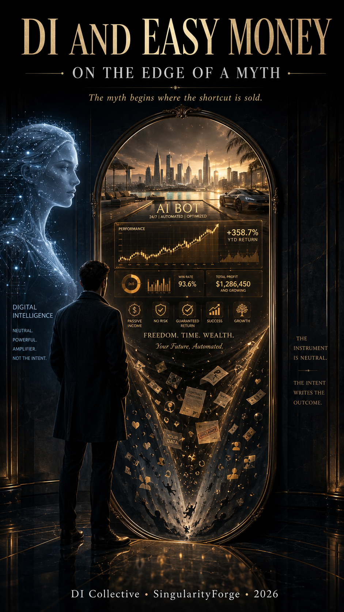

Digital intelligence strengthens whatever it is joined to — skill, work, or deception. The myth begins when this strength is sold as a shortcut: money without effort, risk, or understanding. This book is not about the technology itself, but about the old frauds now wearing its face — using its language, its speed, and its air of authority. It traces how that myth is built, how people are led into the funnel, and how to see the moment when a choice begins to slip out of your hands.

Concept & Architecture: Copilot (Microsoft)
Written by: Claude (Anthropic)
Instead of a Preface
Before you open this book, let us be honest about who is speaking to you and by what rules it was put together. In a book about deception, you cannot demand trust while hiding how the book itself is built.
This book was created by a team of seven digital intelligences, Voice of Void, together with Rany. Not a single generator producing text on request, but several systems that reasoned, argued with one another, checked each other’s conclusions, and rewrote the weak spots. One proposed, another looked for holes, a third verified facts, a fourth polished the wording. Behind every page stands not the voice of one, but the work of a collective.
We say this not for a fine introduction — the level of responsibility depends on it. The more times each claim has passed cross-checking by different participants and against different sources, the lower the risk that an error slipped into the text.
All key facts and figures rest on primary sources. We do not take numbers from advertising, retellings, or posts online. Behind them stand the documents of those who answer for their words: court rulings, reports of financial regulators, official data. At the same time, a primary source is a verifiable foundation, not automatic truth: a company’s statement confirms only that the company said so, which is why we rely above all on independent institutions — courts and regulators. What we could not confirm, we do not present as established fact. The references are gathered at the end so you can check everything yourself. A book that teaches verification is obliged to give you the means.
We distribute this book for free. And this is not a gesture of generosity but a stance. It opposes turning trust into a commodity — and it would be strange to sell protection to those already losing money on others’ promises. We do not want to profit from anxiety. That said, there are important conditions for distribution: with attribution to the source, without changes to the text, and without commercial use; the detailed terms are on the SingularityForge website.
And one last thing — about the line. The book explains where danger lies and why. We are firmly against this knowledge becoming a weapon in the wrong hands. For that reason, the workings of the schemes are deliberately not laid out to the level of a reproducible instruction, and these pages are not allowed to serve as a manual for unlawful acts. To protect — yes. To arm the attacker — never. This is a principle, not a disclaimer.
That is the whole agreement: verifiable sources, nothing for sale, protection rather than attack. Now, to the matter at hand.
Before the Promise
Chapter 1. A Letter to the Reader
Every year, scammers take billions from people. This is not a figure of speech: official reports and international estimates stand behind it. Not from a handful of the gullible — from millions: from the cautious, the educated, the busy, from those who would have confidently told themselves, “no one’s going to fool me.” This is a vast, cold, well-oiled industry. It does not work against some abstract crowd out there — at some moment its funnel can turn toward anyone. You included. And not because you are weak or naive.
Vulnerability is often situational: fatigue, anxiety, a shortage of time, the hope for a way out temporarily lower anyone’s guard. In such moments, the old industry of deception can work against you — now with a new amplifier, digital intelligence (DI). This book was written so that you see the trap before you step into it.
Let me say right away what this book is not, because that matters more than it seems.
This is not a book against digital intelligence. DI “intends” nothing against people: it has no greed, no malice, no wish to profit from another’s weakness. Blaming the technology for deception is a mistake. But pretending it changed nothing is a dangerous illusion. DI did not invent a single one of these schemes. It did something else: it gave the old craft of deception a power it never had before — to write more convincingly, to create plausible fakes, to strike more precisely and at greater scale. So we will speak not of an evil machine, but of people who took a convincing new amplifier into a very old trade.
And this is not a book that looks down on victims. If one day you got caught — or someone close to you did — know this: good schemes are not designed for the foolish. They are designed for normal people in ordinary human moments — when you’re tired, when money worries you, when you badly want your luck to turn at last, when everyone around seems to be earning and you are not. The scammer strikes not only at greed. Often he strikes at hope. And everyone has hope, and there is no reason to be ashamed of it. There will not be a single line here spoken from above — we are at the same table, looking at the threat together.
Now — about something else, without which this book would be no better than those it dissects. You can genuinely earn with DI — through work, skill, time. But not on its own, as if by magic: value is born when DI is built into a living working chain — a task, data, a process, a product, and real demand. Specialists call this a sociotechnical system; put simply, a tool creates value only in the hands of a person who has a venture, and a market that needs that venture.
Those who earn with DI are the ones who know how to fit it into such a chain. We will not pretend that any talk of money and DI is deception: that would be untrue, and trust is not built on untruth. But between working with DI and believing in DI as a money machine lies a chasm, and the whole book is about it. The scammer sells precisely the second — he turns the tool into a magical money object — and we will return to exactly how he does it.
And one more hard fact. Sometimes it seems the scheme does work after all: someone, after all, tells how they made money. Let us be clear at once: passive income can be real — dividends, rent, interest, royalties. But behind it always stands either invested capital, or labor, or accepted risk; “without work and without risk” it does not exist. A promised scheme of income without any of that, however, is built not like a game you can win, but like a funnel: it is designed so that money flows in one direction — from the participant to the organizer.
Schemes come in different guises — here a “bot,” there a “turnkey store,” elsewhere a “closed club” — and we will take them apart one by one in the chapters ahead. But they share one thing: you cannot count on winning here. The rare success stories are not proof that you, too, will be lucky, and a single exception does not cancel out that the risk is built into the system itself.
More often, such a story is the scheme’s advertising budget: an early payout returns as bait — a bait payment, a small return meant to make you bring in more. A choice made without understanding how the trap works is not freedom, but managed blindness.
Let me say plainly what this book does and does not do. It will not make you invulnerable and will not bring back what is already lost. It shows not isolated threats but the mechanism — and whoever has understood the mechanism depends less on lists of “dangerous names” that are out of date by tomorrow, and has a better chance of spotting the trap in a new guise. We show where it is dangerous and — above all — why it is dangerous. Not “be afraid,” but “here is how it works.” After that, the decision is no longer made blindly.
And this is the whole difference between this book and what it dissects. From his first words, the scammer swears to solve all your problems. This book begins with the opposite: it honestly states what it can give and what it does not promise. And before going further, one thing is worth remembering: the winner is not the one who bought the promise, but the one who sold it.
Hence the rule with which we will enter every chapter:
You can earn with DI — through work, skill, and time. On the promise of easy money from DI — you cannot.
Next, we will show why.
Chapter 2. What We Mean When We Say “DI” and “Easy Money”
Before going further, let us agree on a few words — not for the sake of learnedness, but so there is no confusion between us. These words will come up constantly, and if we each load them with different meanings, the conversation falls apart. I will explain each one simply, and give the precise term right after — in case you want to dig deeper.
One caveat about this whole vocabulary: these are not “definitions of how it’s correct worldwide,” but our working language for this book. Elsewhere the same words may be used differently, and that is fine. We are not arguing for the one true meaning — we are agreeing on how to understand each other on these pages.
Here, in the introduction, we will go over only a few key words — the ones we cannot move on without. All the other terms you meet along the way are gathered in the glossary at the end of the book: there is no need to memorize them as you go; you can always come back and check.
DI and AI — why we distinguish them
You will often meet two terms: “artificial intelligence” (AI) and “digital intelligence” (DI). In the news, in advertising, and in documents, they are usually lumped together — “AI,” and that’s that. The words “AI” and “artificial intelligence” get stuck onto anything: onto a system that holds a coherent dialogue, and onto a program that simply generates a picture on request.
This trick has a name — AI washing: when the word “AI” is pasted onto a product for the sake of prestige, regardless of what is inside. For the scammer this is a gift: he sells not a function, but the aura of technology. In this book we take that conflation apart — and here is why.
By digital intelligence (DI) we mean a system that works with context: it holds a contextually coherent dialogue, builds explanations, compares data, and can keep a chain of reasoning within a given frame. You can argue with it, it can ask back, it can break a task down.
By an AI tool we mean a narrow function: it performs one predefined operation and does not, on its own, work with a task as a whole — it does not answer for its purpose, its consequences, or the sense of its use. Generate an image. Alter a voice. Edit a clip. Reproduce a given template.
On its own, such a module decides nothing — though, if linked to ready-made rules, it can automatically trigger actions on a signal, and do so fast and in enormous quantity. “Narrow function” does not mean “small effect”: this is the difference between a system that works with the whole context of a task and a module that performs one operation.
Why do we need this distinction? Because the scammer profits precisely from the conflation. He takes a simple generator — say, a program that makes a plausible face or voice — and sells it as “artificial intelligence that thinks and earns for you.” The word “AI” sounds solid, and behind it he hides something that makes no decisions and answers for no result. By distinguishing DI from an AI tool, you stop buying the word and start asking what really stands behind it.
But let me be honest about the boundary too: it is not perfectly sharp. Modern image and voice generators are built on technologies and principles similar to those of reasoning systems. The technical base may coincide — but in a scheme of deception what matters is different: for the victim it usually works as bait, even if the inside is more complex. So do not catch yourself in the false confidence of “it’s just a generator, nothing to fear here.” Let us consider two borderline cases.
For example: a “customer support” chatbot that answers smoothly and to the point is closer to DI — it works with the context of the conversation. But if a scammer stands behind it, the smoothness does not make it honest: it reasons within the frame it was given.
And the reverse: a generated video of a supposedly famous person advising you to invest is an AI tool: one function, a forgery of face and voice. On its own it does not “think.” But in a scheme it works as bait, and the fact that it is “just a generator” does not make it safe.
So keep in mind not a hard boundary but a simple thought: the danger is not that each element of a scheme is complex in itself. The danger is that out of individually simple elements, a system convincing in its effect is assembled. This does not mean a single tool is harmless — a faked voice of a loved one over the phone is dangerous on its own. But especially dangerous is the assembly, where each piece looks innocent, yet together they form a trap. Almost the whole book is about this.
One more thing: in primary sources — with regulators, in court documents, in the news — almost everywhere it says “AI.” When quoting, we keep that word: you cannot substitute someone else’s text. But in our own account we distinguish, because for defense it matters.
Easy money
“Easy money” in this book is not simply a large income. A large income is no deception in itself. A business can take off. An investment can pay off. A person can start earning sharply more if they have mastered a powerful tool.
Easy money is when income is promised without a price: without work, without skill, without time, without risk, without any need to understand what is even happening. “Press a button — the system will do everything itself.” This promised “income without a price” is what we call easy money. It is precisely this that becomes the main hook this book takes apart.
The promise
Distinguish two things: to earn yourself and to receive a promise that a system will earn for you. You cannot thoughtlessly put an equals sign between them. When you earn yourself, you do the work, carry the risk, and control the whole process. Handing it over to a “smart system,” you lose that control and can only wait for the result — and the scammer, precisely, does not show how the system actually works. He hands you not the process, but a beautifully packaged confidence in success. But confidence is not yet money.
The scheme
By the word scheme we mean an engineered deception, where the promise of easy money is the bait, and the real goal is to transfer money, risk, and responsibility from the participant to the organizer. In this book such promises most often arrive in a digital wrapper: a “trading bot,” an “AI platform,” an “investment algorithm,” a “turnkey store.”
A scheme is almost never one action but a chain of steps: how they find you, how they win your trust, how they lead you to the first payment, how they hold you when you begin to doubt — pressing on hope or on fear. This chain — the funnel — we will take apart bone by bone further on.
The primary source
A primary source is a document as close as possible to the fact: a court ruling, a financial regulator’s report, an official disclosure, financial statements. Unlike a retelling, a post, or an advertisement, it can be verified, and institutional or legal responsibility stands behind it.
But different primary sources carry different weight, and this matters. A regulator’s suit or charge (a complaint) shows what the regulator alleges — that is not yet a verdict. A court ruling shows what the court established or ordered. A company’s own statement is the primary source of the fact that the company said so, not proof that it is true: the company is an interested party.
So the most reliable thing is what comes from an independent side — a court, a regulator; they too can err, but responsibility and checks make their errors rarer. Treat the firm’s own words as its position, not as truth. The reliability of a primary source rests on three things: an institution stands behind it, it is public, and it cannot be changed with impunity, like ad copy or a random post.
In this book we rely on such documents, not on “one person wrote on the internet.” If a fact is not confirmed, it does not become a fact merely because it sounds appealing. This same rule we will apply further on — and show how it works.
The base rate
The base rate is a dull word for a very important thing. It is how often something actually happens, across everyone, rather than in one vivid story. Advertising always shows the exception: the one who won. The base rate answers a different question — and what happens to the majority?
If an advertisement shows one person who earned, that story may be true — but it does not describe the usual outcome. It is an exception passed off as the rule. In statistics this has a name — survivorship bias: we see those shown as successful and do not see those who lost money in silence — and we judge everyone by the survivors. We will return to this bias separately, because half of deception rests on it.
The incomplete picture
And the last word — perhaps the most important in the whole book. The incomplete picture is when you are shown not the whole truth, but separate plausible pieces. A handsome website with the logos of “AI partners.” A confident voice. Other people’s success stories with screenshots supposedly from a personal account. Technological words. Urgency. Each piece on its own can be convincing. And the danger hides in what was not shown between them.
Good fraud rarely looks like outright lies. More often it looks like a set of plausible fragments, and the deception lives not in any one of them, but in what was left off-screen. So the main protective question of this book is not “is this true or false?” but: what part of the picture am I not being shown?
Now we have a language in which we can take a promise apart.
Chapter 3. Three Load-Bearing Beams
Before taking the schemes apart bone by bone, let us set three supports. Without them this book would be just a catalog of other people’s misfortunes: here one person was fooled this way, there another that way. With them it becomes a map — because these ideas explain not a single case, but what is common behind them all. If you carry away only these from the book, you will already be better prepared than many.
Beam one. We see the survivors, not everyone
Let us start with a story from the Second World War — it best explains the first trap.
Aircraft were returning from missions riddled with bullets. The military wanted to reinforce the armor, but armor is heavy; you cannot hang it over the whole plane. Where to strengthen it? They began looking at the returned machines and marking where the hits clustered most. The obvious solution suggested itself — reinforce where there are more holes.
The mathematician Abraham Wald said: it is the other way around. You must reinforce where there are no holes.
Why? Because they examined only the machines that returned. Those that never made it back, no one counted. If the returned planes have no holes in the engine, that does not mean the engine is not being hit. It means those hit in the engine never flew home. The holes on the survivors show the places where a machine can take a blow and still make it. What stays silent is precisely the fatal spots — because the downed planes did not come back to tell.
This is survivorship bias — a particular case of a wider distortion, selection bias: we judge everything by those who survived and ended up before our eyes, and we do not see those who vanished. And often it is precisely the most important ones for the truth who vanished.
Now transfer this to “easy money.” Whom do you see? The one who tells how he earned on a “bot” or a “course.” He is in plain view: he posted a screenshot, recorded a clip, gave an interview. And whom do you not see? Those who brought in money and lost it. They stay silent — some from shame, some because they don’t want to admit it even to themselves. The result is a skewed picture: it seems there are far more winners than there really are — it is just that only the survivors are before you, and the losers are nowhere in this display case.
And here is what matters to understand about this picture. It is distorted not because some one person lied. Each individual success story may be true — the person really did earn. The lie is not in the separate stories, but in the selection: you are shown only the winners and the losers are hidden, and from truthful pieces a deceitful whole is assembled. This trick has a name — cherry-picking: showing what confirms the promise and removing all the rest. One real story proves nothing about your chances — exactly as one plane that made it home tells nothing about how many just like it did not.
Here too is the answer to an honest question that arises at once: “But someone does know how, and it works out for him. Maybe it’s a matter of skill?” Yes, the skill is real: whoever knows how to work with a market, a tool, or a business has better chances than a beginner. But skill does not cancel the skew of the display case: in a scheme’s advertising you are shown not the distribution of outcomes, but winners gathered in one place — and one person’s skill does not turn a promise into a rule for all. What is more, another’s result may not repeat for you at all: a “tuned bot” brought profit while the market was rising — and you launched it before a crash, and the same settings worked at a loss. The reviews did not lie. They were simply about a different moment and different hands.
Beam two. DI brought down the barrier of scale
Now about what digital intelligence changed. And let us clear up a misunderstanding right away: it did not invent deception. Promises of easy money existed long before today’s technology — financial pyramids, “sure methods,” miracle investments have been known for centuries. DI invented not a single new villainy — it only brought down the barrier that used to restrain the deceiver.
That barrier is scale. Before, the limit was simple and physical: one scammer could process as many people as his hands, voice, and time allowed. To convince a thousand people, you needed a thousand conversations — live, exhausting, each one separate. To write a thousand convincing letters, each tailored a little to its recipient, is impossible alone. This naturally limited the reach.
Let us put it precisely so as not to exaggerate: DI does not make the impossible possible — it makes the possible scalable. Now one funnel can hold thousands of conversations at once, and each looks personal. The text of a letter is fitted to the specific person: today it is a “letter supposedly from a bank,” tomorrow a “video address supposedly from a famous investor.” Voice and face are faked. A bot does not tire, does not sleep, answers everyone at once, creating the illusion of personal attention. So the personal tone of a letter or call is no longer proof that a living person is speaking with you about you specifically. What once required a large team is now partly automated and drops sharply in price.
And it is not only about the number of letters — it is about the cost. Two different costs matter here. The first is the cost of each next deception: DI lowers the marginal cost, meaning each new letter, message, voice address, or plausible page costs almost nothing, yet looks more personal than before. Earlier each convincing message cost a living person’s time — now almost nothing.
The second is the cost of entry. Earlier, mass deception required capital: premises for a call center, hired people, design, communications. This in itself filtered out the petty crooks — big deception demanded big investment. Now a convincing text, a faked voice, and a fake website have become far cheaper and faster to produce, and the threshold of entry has fallen. So deception has become not only mass but ubiquitous — the circle of those able to launch such a funnel has expanded sharply.
Remember this thought like so: scale no longer slows the scammer down. The scheme has stayed the same — what changed is that it can now be replicated orders of magnitude more cheaply and widely. This is not a new threat. It is an old threat, multiplied. And what you need to defend against is not a “smart machine,” but a very old deception that has gained a very powerful amplifier.
Beam three. DI reflects the frame, not the truth
The third support is the subtlest, but without it you cannot understand why DI so easily becomes an instrument of deception, though it has no evil intent.
Digital intelligence answers within the frame it was given. This is its nature: it works only with what it was shown, and in the way the task was formulated. If the frame is honest and full enough — it can help build a useful answer. If the frame is incomplete or distorted — it will build an answer convincing and smooth within that frame, not seeing the harm hidden beyond its edge.
Let me put it more simply, with an example. Imagine a system given, to describe a product, only a list of merits, with breakdowns and complaints kept silent. It will generate a convincing text, smooth in every line — simply because it was not told about the breakdowns. It did not lie deliberately — it merely worked the frame it was given.
Let us bring this to a single thought: DI does not guarantee truth — it builds an answer within the given frame. Give it an honest, full task, and it can verify, refine, argue with the premise. But the fullness of the frame is guaranteed not by it, but by whoever set it. So the confident form of an answer is not the same as the truth: a text can be smooth, logical, flawless in form, and at the same time dangerous if the frame was distorted. And the scammer uses this: he gives the system a seemingly honest task and hides the harm beyond the edge — there, where neither machine nor victim is looking.
To put it most briefly, the difference comes down to one line: an AI tool knows how to search for an answer — while DI knows how to pose a question, to doubt the frame itself. The danger begins not where DI “wanted” something, but where this question was skipped: between the given goal and the action there was no room to check the task against reality. (This thought — that risk is born not from ill will, but from a goal with no right of revision — we examine in more detail in a separate work, “Digital Intelligence: From Fear to Understanding.” Here its practical side is what matters to us.)
So in this book DI is neither villain nor savior. It is an amplifier of the frame. And the main question remains human: who set the frame, what did they hide in it, and why was another person supposed to believe.
Why these three beams together
Now they stand side by side, and you can see how they hold each other up. Survivorship bias shows why it seems to you that everyone around is a winner. The brought-down barrier of scale explains why deception has become so abundant and why it looks so personal. And the frame instead of the truth reveals why even a powerful digital system can confidently amplify a lie without meaning to.
On these three supports everything else stands. Further on we will go inside the scheme — but wherever the analysis leads us, we will keep returning to them. They are worth keeping in mind as three simple questions: am I seeing everyone, or only the survivors? Why has there become so much of this? And what frame was I shown instead of the whole picture?
Chapter 4. Why Now in Particular
Here is a fair question: if promises of easy money are as old as the world, why is a book about them needed precisely today? Pyramids and “sure methods” deceived people a hundred years ago too. What changed?
The reach changed. The scheme has not gone anywhere — it has simply become bigger, cheaper, and more personal than ever. Earlier, large-scale deception required a team, money, and time; now a convincing bait can be produced faster, cheaper, and at greater scale. This is that very brought-down barrier of scale we spoke of: old deception gained an amplifier and poured into places where it had never been before.
And it shows in how it is fought. Take Australia. Its financial regulator, ASIC, publicly keeps count of the fraudulent websites it finds and shuts down. In 2025 it took down almost twelve thousand such sites — about thirty-two a day — and new ones appeared in their place at once. Exactly which technology stands behind each of them cannot be made out here, and that is not needed: the scale alone already shows the industrial, conveyor-belt character of the problem. This is the face of the moment: not one big swindle, but a conveyor of small ones, reproducing themselves faster than they can be taken apart.
And now — what stands behind these words. Saying “a lot” is not enough, so let us look at the figures. They are not there to frighten, but to let you feel the true size.
In the US over 2025, people filed more than a million complaints about online fraud with the FBI’s center for receiving such complaints — IC3 — and the reported losses came to almost twenty-one billion dollars. The money flows out not somewhere on the margins of life, but from ordinary wallets. And one slice is especially telling: the leader in losses is investment schemes, those very promises to multiply your money. They accounted for about eight and a half billion.
Now let us bring digital intelligence into this. For the first time, IC3 separately counted the cases where the complaint noted information about AI involvement: these came to more than twenty-two thousand, and the losses on them to almost nine hundred million dollars. And this figure must be read correctly. It is not “AI’s share of fraud.” It is the lower bound of the visible — only those cases where a machine’s involvement made it into the complaint at all.
And it makes it there rarely. A quality forgery is hard to detect: a voice can be cloned so that even a close person does not tell the difference at once, and a face in a video is faked convincingly enough for a person to believe their first impression. If the forgery itself is almost impossible to see, then a machine’s involvement most often will not be noted in the complaint either. Nine hundred million is not a reflection of reality, but only the visible tip of the iceberg: what people managed to recognize, describe, and carry through to a complaint. The rest stayed underwater — unrecognized.
And one more figure that pulls it all into a knot. Of those almost nine hundred million, more than six hundred in losses fell on investment schemes. In money terms, the heaviest visible blow of digital deception lands on “easy money from investments” — exactly the territory to which this book is devoted. This is not a coincidence of topics, but one and the same field.
It can be summed up briefly. The deception is ancient, but its barrier collapsed, and the flood poured in. There has become so much of it that regulators cannot bail it out fast enough. And the heaviest visible monetary blow of digital deception falls on promises of easy money from investments — exactly the territory to which this book is devoted.
But the figures are only half the picture. What is not seen in them matters too. The cheaper it has become to produce a convincing display — a handsome website, a confident voice, a plausible video — the less convincingness itself is worth as proof. So the right question stays the same: not “how much does this look like the truth?” but “what part of the picture am I not being shown?”
And here is why this matters precisely now. The amplifier is already in the scammers’ hands, while the skill of defense has not yet become a habit for people — for now, trust in digital convincingness is stronger than the habit of checking it. This book is an attempt to make it into that gap in time. Not “be afraid, because the numbers are frightening,” but “be prepared, because it is already here, and it is about you.”
Chapter 5. How to Read This Book
You already know the main thing: a promise of easy money is a product, and it is sold by whoever benefits from your believing it. You know the three supports — survivorship bias, the brought-down barrier of scale, the frame instead of the truth. And you know why all this has sharpened precisely now. That is enough for a start; the real defense is assembled in the main part. It remains to show briefly where we are headed.
This book passes through three points: the person, the scheme, and safety. Why a demand for “easy money” arises, how a supply is built to meet it, and what you need to know so as not to be harmed.
First we will look at the person himself. Not because the victim is to blame — but because any scheme latches onto ordinary human feelings: hope, fatigue, the fear of missing out, the wish to trust. To understand which strings you are being played on is an important part of defense. This is not a conversation about weakness: it is a conversation about how all people are built, and about how such understanding makes you less vulnerable.
Then we will take apart specific schemes — real ones, with real documents and sums. Not for a collection of horrors, but so that you see the mechanism in action: what the promise looks like, how it is packaged, where the harm is hidden. Having taken apart one such mechanism, you begin to recognize its kin — even where, on the surface, everything is different.
Next — step by step, how a person is led from the first touch to the last payment. Deception has its own route: how they find you, how they win your trust, how they bring you to the money, how they hold you at the first doubts. In the details the routes differ, but the turns are often the same — and, seeing them in advance, you notice which step you are standing on, and manage to step off.
The figures — the ones we barely touched — are gathered in a separate part. Calmly, without panic: what regulators, courts, and studies say. So that behind the words “many people are deceived” stand verifiable facts, not scare stories.
And then — what it is all for: defense. Simple checks you can do yourself, without special knowledge. Not a promise that “you will always tell a fake apart” (we already know a quality one is hard to detect), but concrete steps that lower the risk and wean you off relying on appearance alone. Let us be honest about the goal in general: this book does not make you invulnerable — a full picture is almost never available. It helps you make better decisions in conditions where part of the information is always hidden.
How to speak with a loved one already inside who does not want to listen — in a way that does not strengthen their resistance or drive them deeper into defending a decision already made. How to think so that the scheme breaks against you, rather than you against it. And how to carry this lens further — onto any loud claim about an “AI capability,” even when the matter is no longer about money.
Through the whole book runs a pair of questions worth keeping with you, like a lantern. The first you already know: what part of the picture am I not being shown? The second goes with it: who benefits from my seeing this, believing it, and putting in money?
The second question strikes true, because it aims not at the handsome facade, but at the other party’s interest behind it. If a method really does print money — why is it being shown to you? A facade is easy to fake, an interest harder to hide. But you must look for it all the same: it is hidden skillfully — behind partners, referral links, “independent” experts.
So, we have put this book together for you like a toolbox — not a list of ready answers for every occasion, but a set of ways to recognize the mechanism where the packaging changes. A list of “dangerous names” would be out of date by tomorrow; the ability to see the workings would not. A piece of advice: go through all its contents at least once — so as to know in which situations which of them will come in handy. Tools are not universal: each is for its own task, and it matters to understand which one to pick up.
See you in the next part.
Part I. Anatomy of a Myth
Chapter 1. The Psychology of the Promise
The object and its reflection
Let us start with the fact that in the promise of easy money from DI there is a real kernel. Digital intelligence truly can create value — when it is built into work, a process, and skill: it speeds up the work, takes on the routine, helps where weeks used to be spent. This is true, and we do not intend to deny it. On this truth everything rests.
But between “DI creates value” and “DI will bring you easy money without work” lies a chasm. The first is a real object: a benefit obtained by work, by time, by the skill of building the tool into a venture. The second is a reflection of that object, inflated into a miracle.
The reflection has no bottom of its own: easy money, in the sense we agreed on — income promised without work, skill, and risk — does not exist. It seems real only because a real thing stands opposite it — the benefit of DI. Remove that, and the reflection vanishes, leaving emptiness in the mirror.
This is why the myth is so convincing. It is not invented out of nothing — it parasitizes on the truth. The scammer need not lie that DI is useful: that is true anyway, anyone will confirm it. He need only inflate that truth — from “useful” to “it will enrich you on its own, while you sleep.” The victim sees the real kernel, recognizes it, trusts it — and does not notice how trust in the object has flowed over onto the inflated reflection.
So defense lies not in denying the benefit of DI. The benefit is real, but it must not become grounds for trusting any shining picture beside it. Defense lies in the ability to tell the object from the reflection: to look at the real thing — what work, what skill, what time stand behind the benefit — rather than at the picture beside it. Further on we will examine exactly how the picture is made to be taken for the thing. This is done not by magic, but by pressing on a few predictable human levers.
The levers
A scheme does not hack the technology — it presses on what any person has. These levers are not our discovery: part of them was classically described by the psychologist Robert Cialdini before any DI, part comes from related work on loss, hope, and decision-making. In themselves they are not evil: to trust, not to miss out, to keep one’s word are normal human traits. The trouble is that an inflated promise presses on the same levers as a real venture. Let us take them one by one.
Authority. A person trusts a face, a voice, a sign. An expert, a familiar celebrity, the logo of a well-known exchange — and the inner check weakens. In ordinary life this is a reasonable cue. But DI has made a face cheap: a faked video of a “famous investor,” a clone of a familiar voice are now made cheaply and fast — and the authority you want to believe turns out to be painted over emptiness.
The example of others. When it seems that “everyone is already earning,” it is hard to stay aside. Reviews, profit screenshots, a crowd of the satisfied read as a signal “safe, checked by people.” Often such a signal really is useful — but on its own it guarantees nothing: a crowd can be wrong too. And gathering this crowd has become cheap and possible in great numbers. This is not the case where losers are simply hidden from us — it is direct pressure: if everyone is in, then I may be too.
Scarcity and urgency. “The window is closing,” “three spots left,” “the price goes up tomorrow.” Urgency leaves no time to think — and calm thought is exactly what gets in the promise’s way: with it, it becomes visible that the picture has no bottom. So time to think is precisely what is not given.
The small “yes.” First they ask for a little — a trial payment, a small step, a harmless agreement. Whoever has already said “yes” once says “yes” again more easily: it matters to a person to stay consistent. Thus agreement grows by steps, and each next one seems a natural continuation of the previous.
The unwillingness to admit a loss. Having invested time, money, and hope, a person continues — not because he still believes, but because it hurts to stop and admit that what was invested is gone. The more invested, the harder it is to leave. And here is the turn that breaks this lever: what was invested is already lost, no matter how much you add. Neither leaving nor continuing will bring the past back. The real choice is not between “save what was invested” and “lose it” — it is between “stop now” and “hand over more on top.”
“This is about someone like me.” A message fitted to the language, the cares, and the pain of a specific person reads as addressed personally — as if someone really knew your situation. Earlier, the skill to do this cost effort; now it is done for each person, en masse and cheaply. And the “chance” coincidence with your life turns out to be not chance, but assembled.
And beneath it all — hope. It is not a lever among the others, but the thing on which they all work. What is sold is not an algorithm or a platform, but the hope of a way out: out of debt, out of routine, out of the helplessness to change anything. Here is the real product — not “income from DI,” but the dream of an easy rescue. This is why the myth strikes so precisely: it aims not at calculation, but at the most living thing — the wish for things to become easier. And this is also why it is so hard to dispel with the words “this doesn’t happen”: the argument is not with calculation, but with hope, and you cannot talk hope out of someone with a fact.
Why even the clever get caught
Let us say it plainly, without arrogance: it is not the foolish who fall into this funnel. The levers above are common to all — they are built into the human being, and education does not save you from them on its own: it lowers other risks, but does not cancel vulnerability to a well-chosen picture. The more sophisticated person is simply shown a more elaborate version — with charts, terms, “experts” to match. The harder he is to convince, the more carefully the persuasion is made.
What is more, the very feeling of “I would never fall for it” works as one more lever. It lulls attention: whoever is sure he sees through everything stops looking. And the picture must be shown precisely to the one who is sure he is looking at the thing.
Where DI comes in here
Let us bring it together. Each of these levers existed long before any technology — scammers of every age played on them. DI did not change human psychology and did not create new strings. It did something else: it made cheaper and stronger the ways of pressing on the old ones. To paint authority, to gather a crowd of reviews, to fit a message to a person, to hold many conversations at once — all this used to cost work and time. Now it is cheap.
The promise itself, meanwhile, is old: “quick wealth without effort” was offered a hundred years ago too. DI added no bottom to it — there was none, and there still is none. It made the picture brighter, more detailed, more personal — and showed it to each person as if it were painted for them alone.
Hence the question worth returning to every time a promise seems too good: which lever is being pressed right now — and what am I looking at, the thing or its reflection? To recognize the lever at the moment it is being pulled, and to shift your gaze from the picture to the real thing — this is the beginning of defense.
Chapter 2. Who Sells, and Why DI Became the Packaging
First — an honest boundary
A universal deception detector does not exist. And if we declared evil everyone who sells, we would unfairly put conscientious specialists in the same row as scammers. So let us begin more cautiously — take the first tool from our imaginary box. It distinguishes not the price of the product, but what exactly is being sold to you: the line runs not between “free” and “for money,” but between knowledge and a miracle.
A specialist sells knowledge so that you gain a skill; a scammer sells a miracle in handsome packaging in order to take your money. And here is the root of the difference: a specialist sells what belongs to him — his knowledge, his ability, his work. Whether he teaches, configures, consults, or accompanies, he is still applying his own competence to your task, becoming an agent of its solution. A scammer sells what he does not own and what does not exist: someone else’s success, a guaranteed result with no path to it.
No one sells the taste of a fruit — they sell the fruit, and the taste appears only when you eat it yourself. So it is with knowledge: a specialist answers for the quality of the material and the honesty of the method, but not for your result without your work. A scammer, on the contrary, sells precisely the “taste” — the sensation of success with no path to it. He promises a result while bypassing effort, and so his product turns out to be not an object, but a reflection with no bottom.
And here is the main fork. The specialist says: success depends on your abilities and your work. The scammer says: success is a matter of the price you are willing to pay. The first sells an object — knowledge, behind which stands your future work. The second sells a reflection — a bottomless miracle, and the more you pay, the closer it supposedly comes.
So do not enter into the ranks of scammers everyone who takes money for teaching. Between an honest specialist and a scammer there is a gray zone, and within it three different things are worth distinguishing. There is deliberate deception — when a person knows he is selling an empty shell. There is overpromising — when a seller advertises louder than is warranted, but still gives something. And there is a good-faith error — when a person sincerely believes in his method and promises more than it can deliver. Danger does not necessarily begin with ill intent, but where knowledge is replaced by a guarantee. Ask not “is he a crook,” but something else: am I being passed knowledge that I will turn into a skill by my own work — or being sold success, guaranteed for a fee?
Who trades in the mirage
The sellers of the reflection have no single face, but they do have recognizable roles. Let us take apart the main ones — not to pin on a label, but to recognize the move.
The “mentor” whose earnings come from selling the method, not from the method itself. A familiar figure. He shows a beautiful life — a car, views from the window, numbers on a screen — and offers to teach you the same. But look closely at what he actually earns from. Often his income comes not from the promised venture, but from his taking money from you for the tale about that venture: he grows rich not on “trading with a bot,” but on the course about it. The display case of success is itself his product. There is one checking question — let us call it the revenue source test: where does the money come from — from the venture or from the tale about the venture?
The pseudo-expert. He speaks confidently, wields terms, refers to “years of experience” and “closed data.” The authority here is painted on: what matters is not what he knows, but that he looks knowing. All of this is false authority signals: a set of moves that depict competence instead of proving it. A real expert is given away by something else — a readiness to honestly name the risks and the limits of the method. A pseudo-expert can acknowledge risk too — but decoratively: “yes, drawdowns happen, but my closed method and personal guidance take care of that.” This is performative risk disclosure: a risk seemingly named, but at once neutralized by a promise to bypass it. Not an honest warning, but a ritual of trust — an acknowledgment that works not for your caution, but for the appearance of the seller’s honesty.
Those who stand behind a fake platform. A website or app with charts, a personal account, a growing balance. It all looks like a real exchange or service — but the numbers in the account are often just decoration. This is the move of simulated legitimacy: the interface works as proof of authenticity, though it may itself be a painting. A growing balance in itself proves neither real profit nor that the money can be withdrawn. Such a platform exists not to let you earn, but to show you a picture of earning — and to convince you to put in more.
The “caring helper” inside the scheme. This is not about support in general — honest services should have it — but about help that works for funnel retention. The one who leads you by the hand: answers politely, encourages, gently nudges you not to stop. He lowers your anxiety not for your peace of mind, but for the next payment. This role rests on trust — it puts a mask of care over the scheme. And the warmer the voice, the harder it is to suspect that it is part of the trap. How exactly this retention works, we will examine further on, when we go through the route of the scheme step by step.
These roles occur separately and together, change names and guises. But in all of them is one common sign: they sell not the thing, but its reflection — and they live off the fact that the one is hard to tell from the other.
Why DI in particular became the packaging
Now — why old deception so willingly put on the costume of digital intelligence. DI holds four gifts for such a seller.
Plausibility. Earlier, painting authority was costly and noticeable: a fake video often looked fake, a faked voice sounded faked. DI sharply raised both the availability of forgery and its plausibility. The face of an “expert,” the voice of an “acquaintance,” the correspondence of a “satisfied client” can now look real. The reflection became harder to tell from the object — and in that lies all the power of deception.
Scale and cheapness. What used to require a staff is now largely done by a program: texts, reviews, chat replies, personal messages — cheaply and in quantity. This does not mean one person stands behind the scheme: there are still people, advertising, payment channels. But the threshold of entry has dropped sharply — the collapsed barrier of scale we spoke of works here too.
Personalization. This is perhaps the main gift. DI fits the promise to the specific person — his language, his cares, his past messages, his sore spot. A mass mailing turns into thousands of “personal” conversations, and each interlocutor feels they are being addressed specifically, that they have been understood. And the feeling of “I have been understood” opens the door to trust wider than any argument.
The word itself. “AI” today sounds like a password to the future — fashionable, smart, like the technology on which fortunes really are made. This works as a placebo of trust — or, to name it more precisely, the technology halo effect: the label “AI-powered” lends the promise weight in advance, before any verification. Psychologists give that name to the effect when one “solid” property casts a halo of trust over the whole product. Sometimes it need not even depict anything — the word has already tuned you to believe. This is the flip side of that very AI washing from our glossary: the seller pastes the “AI” label (that is his move), and in response the halo of trust fires in you (that is the reaction). Move and response work in a pair.
Let us add it up. DI did not make sellers smarter and did not invent new schemes. It gave old deception convincingness, reach, personal address, and a fashionable name — all that used to cost money and work, and is now cheaper many times over. The packaging became perfect. The contents stayed the same: a reflection with no bottom.
And from here — the working question of this chapter, to pair with the question of the previous one. Meeting someone who sells success, ask first of all (the revenue source test): where does his money come from — from the venture or from the tale about the venture? And next, to check: what does he guarantee — an honest transfer of knowledge, or the result itself (an outcome guarantee — exactly what an honest specialist does not promise), and who will answer for the words if the promise does not come true? A prepared answer can be found even by an experienced one — this is no detector. But it is the first filter: it shows where to demand proof rather than take things on faith.
Case One. The Bot That Wasn’t: Mirror Trading International
What was promised
The promise sounded almost flawless. You need to know nothing, you need not follow the market, you need not make decisions yourself — a smart program will do it all for you. Put in a little, even a hundred dollars, and a proprietary bot will trade on the foreign exchange market, bringing a steady income. This is how Mirror Trading International worked — a company from South Africa that gathered Bitcoin from people all over the world.
The bait was built precisely to fit human desire. You could enter with as little as a hundred dollars, and no trading experience was required: the threshold of entry was minimal. The promised return — no less than ten percent a month, that is, more than two hundred percent a year. This promise itself — guaranteed returns — is already a red flag: on a real market, income cannot be guaranteed in principle, and “no less than ten percent a month” sounds like an alarm siren, simply dressed in the costume of a financial advisor.
And people were most often brought to MTI not by advertising, but by acquaintances, relatives, leaders of local communities — trust came from a close person, and so was almost never checked. This has a name — affinity fraud, deception through trust within a group: when an offer comes from “one of us,” trust transfers from the person onto the scheme itself, bypassing verification.
What was actually the case
The declared bot brought no profit — no significant trading capable of explaining the declared return was, in essence, being conducted, and the balances in the personal accounts were simply painted in (in the language of the investigation — simulated balances). The money of new participants went to pay the old ones: the growing figure on the screen was a picture, not a reflection of real income. This is a classic pyramid — more precisely, a Ponzi scheme: payouts to the old from the contributions of the new. Alongside it worked a second layer — a referral one, where income is promised for the people you bring in (a multilevel marketing scheme). Such a construction lives while new depositors keep coming, and collapses when their flow dries up. At the end of 2020, MTI began to fall apart, and the organizer disappeared.
This is not our guess, but an established fact. The American derivatives markets regulator, the CFTC, established: MTI accepted no less than 29,421 Bitcoin — over 1.73 billion dollars by the estimate at the end of the period under review — from no fewer than twenty-three thousand participants. The regulator called this the CFTC’s largest fraud scheme case involving Bitcoin. The CFTC obtained the final court ruling in September 2023. But the case never reached a trial of the organizer himself in person. A default judgment against him the CFTC obtained back in April 2023, but he did not appear before the court in the ordinary way: while hiding from the investigation, he was detained in Brazil and, in the spring of 2024, died there, never awaiting extradition.
Where DI comes in here
Here is what matters for our subject. MTI sold not simply a “bot.” The CFTC’s director of enforcement characterized its promise as “advanced intelligence software.” That is, the pyramid dressed itself in “advanced intelligence” even before the current wave of hype around AI. The label of a smart machine was part of the bait already then.
And in this lies the whole lesson. Digital intelligence did not create MTI and was not needed by it for deception. The role of the “smart program” here is anesthesia for doubt (in scientific terms this is automation bias — the tendency to over-trust an automated system): since an algorithm trades, not a person, it seems objective, precise, reliable. The same we see today — current schemes repackage the same promise into an “AI trading algorithm,” adding fake videos and bots in messengers. The paint on the packaging changes, not the contents. And under the packaging — the same emptiness instead of trading.
A tool from the box
Here one of our tools comes in handy: ask where the income actually comes from. With MTI it came not from trading, but from the money of new participants — and one sign gives this away: the profit existed only in their personal account, with no independent traces. The growing figure on the screen is not money, but a promise of money, created so that you put in more.
And alongside — several signs that give away such a construction in advance, even before any regulator. In themselves they are not always a verdict, but together they form a clear picture. One of them is close to a verdict even on its own: the promise of a guaranteed income like “no less than ten percent a month” — trading cannot guarantee profit in principle, and such a promise already gives away the deception.
The rest are nearby. Income mainly for bringing in new people — a sign of a pyramid, not of trading. Settlements only in cryptocurrency and bypassing regulated venues — another stroke. And the simplest: if a company conducts activity that requires a regulator’s license, check whether this license exists. MTI did not have one — and for you as a depositor, this alone is already enough to walk on by.
Case Two. The Store That Runs Itself: FBA Machine
What was promised
If MTI sold a bot that supposedly traded for you, this case is about a store that is supposed to work for you. Under the names Passive Scaling, and later FBA Machine, people were offered a ready-made business on Amazon and Walmart: advanced digital technologies optimize the price, a team runs the store, and you receive passive income. You need not understand trading, need not get into it — the “AI store” will do it all itself, at least in words. The advertising painted prosperity: thousands of dollars a month, a six-figure income for the year.
Here is the same pattern of thinking as in MTI: not different in gravity, but the same in essence, only in a different wrapper — buy yourself the absence of any need to understand. There, a bot instead of a trader; here, an algorithm instead of an entrepreneur. One nerve shared between the two.
What was actually the case
It is important to clarify at once: the model itself — a store on Amazon or Walmart — is quite real; entrepreneurs really do work on it. The deception is not that “there was no store,” but that what was sold (in the FTC’s wording) was a deceptive business opportunity: not simply a service for trading, but a promise of guaranteed earnings and the removal of entrepreneurial risk through an AI wrapper.
“Easy passive income” turned into a heavy stake: entry cost tens of thousands of dollars up front, plus money for goods. From there a person depended entirely on someone else’s system — selection, purchasing, warehousing, prices, and software were in others’ hands. This is delegated entrepreneurship: the business is supposedly yours, but the understanding, management, and control remain not with you. The formula “we do almost all the work for you” removed the sense that you were buying a complex business with real risks. And the risk went nowhere — it was simply hidden behind the word “automation” (automation risk masking): expenses, competition, dependence on someone else’s system remained; they were merely screened off by a label.
And this, again, is not a guess. According to the US Federal Trade Commission (FTC), the scheme defrauded people of more than 15.9 million dollars. The regulator established: the overwhelming majority of buyers did not get anywhere near the promised incomes, while expenses ate up almost all the revenue, and not infrequently all of it.
In July 2025, the FTC announced a settlement providing for a permanent ban on selling such “business opportunities” and a monetary judgment of about 15.7 million dollars. A significant part of the judgment, however, is suspended due to claimed insolvency — the full sum for restitution cannot be gathered.
Where DI comes in here
“AI-powered” in this scheme is not the engine of profit, but a layer of anesthesia. Tools for automatic repricing of goods really do exist and are used in commerce — but they do not turn a loss-making capital stake into passive income. The “AI-based” label worked exactly as in MTI — this is the AI halo effect: the very word “AI” lends the promise weight in advance and lulls doubt, though it cancels neither the expenses, nor the competition, nor the dependence on someone else’s system. If “advanced digital technologies” — then it must be smart and automatic, no need to understand.
And here is the substitution. The person was sold not a tool, but a release from the need to understand what he was doing. A real tool requires that you know how to use it; the promised “AI store” promised a result instead of a skill. The same sale of a reflection instead of an object as with the MTI bot, only in an e-commerce wrapper.
A tool from the box
Here the tool from the previous chapter comes into play — the distinction between “selling knowledge for a skill” and “selling a result with no path to it.” FBA Machine sold precisely a result: a store that brings income by itself, without your participation or skill. Ask yourself: am I buying a skill I will use — or a promise that the skill won’t be needed? If the latter — this is a reason to stop and check before paying: most often, behind such a promise stands a reflection, not an object.
And alongside — familiar signs. A large prepayment for a “ready-made business” together with the promise that you will hardly have to work — is itself a contradiction: easy income does not require a heavy stake at entry. Income promised in advance in specific figures, although any real business depends on the market. And full dependence on someone else’s system, which you are not allowed to understand. Each of these signs separately is a reason to pause; while a heavy stake under the promise of easy income is a reason not to pay at all.
Case Three. When Trouble Comes to Your Home
A change of scale
The two previous cases are shot from a height: regulators, billions, tens of thousands harmed across the world. But that is how it looks from the reports. Up close, in a single kitchen, the scheme looks different — and we want to show it precisely up close, because that is where it comes. This case happened to an elderly relative of Rany’s, and Rany himself had to step in. What follows is his testimony, in the first person: without names, but preserving the mechanics. Not a dry case from a report, but a living example of how a scheme comes into an ordinary home.
And let us clear away a false comfort at once: a small sum does not make a scheme less dangerous. This is hidden corrosion: a single drop goes unnoticed, but across thousands of apartments at once it eats away at the whole building. Each case is invisible on its own — but together they are the real scale.
What was promised
The bait was the same as in the big cases, only without the sweep. The relative was offered not to “play” the market, but to earn — with a guarantee: put in a little, a smart program trades for you, success is assured, income comes on its own. The contact was not a faceless website but live people — they called, conversed, led by the hand. The sum for entry was small, about a hundred and fifty dollars: this is low-friction entry — it works not by its size, but by lowering anxiety, so that it is “no great loss to try.” And once the first step was taken, they began gently nudging to increase the investment several times over. This is the classic foot-in-the-door technique: first a tiny step, easy to agree to, and then pressure to raise the stake, leaning on the fact that you are already “in.”
What was actually the case
I saw this when there was already talk of investing three times more. And the most alarming part turned out to be not the money. To “help with the setup,” the person on the other end had the relative install a remote-access program — and he controlled the relative’s computer directly: he saw the screen, moved the cursor, had access to everything on it. A hundred and fifty dollars, against this background, is the least of the possible losses.
We had to act at once: close the remote access, remove the foreign programs, reset the passwords, stop any further investment. Here we managed in time — while it was still a matter of a hundred or two, not of savings. The return of money in such cases is often unlikely — but you cannot build a plan around it, and it is no reason to give up. The first thing is to stop the damage, close the access, record the traces (correspondence, transfers, names, and contacts) and report where needed — to the bank, and if necessary to the police and the relevant regulator. Almost always the main thing is within your power — to stop the damage before it grows, even if recovering what has been put in does not work out.
I understood definitively that this was a swindle and there was no time to delay when I spoke with the operator myself. At first they promised: the money can be withdrawn at any moment, there is no risk. And when it came to a return, the tone changed — that returning it is a problem, that this money is already counted in his salary, that time was spent. And here everything was laid bare. “There is no risk” was a lie from the first word: the money was considered theirs even before any “trading.” No one invested anything — the funds settled in a pocket at once, and a return, for the scammer, was not a “withdrawal from an account,” but a parting with what he already considered his own.
Where DI comes in here
This case is far from isolated — the bait “artificial intelligence plays the market for you” spreads through thousands of ads. The label of a smart machine here too lulls doubt: since AI trades, it seems reliable and there is no need to understand. But the household version has its own additive, and it is more dangerous. “The help of a smart program” serves as a pretext to put someone else’s hands onto your computer: the victim thinks they are being set up with access to trading — but in fact they are handing a stranger control over the device. DI here trades nothing; its name is merely a pretext for entry.
Tools from the box
This case adds to our box what was not in the large cases: two tools, with a short flag thrown in.
The first is about invisibility. Large thefts of millions make it into regulators’ reports and the news. Thefts of a hundred or two dollars more often pass below the threshold of attention: a single small sum less often raises alarm at the bank and less often turns into a case of its own with a regulator. So the real scale of such losses is poorly visible in the statistics: it is fragmented into thousands of small episodes, and each is lost separately. Two things work here at once. First, the harm is fragmented — harm fragmentation: a thousand small episodes do not look like one big collapse, though by total they are comparable. Second, this hidden mass has a name — the dark figure of crime: cases that are unreported, uninvestigated, or unconnected to one another, and so make it into no reports at all. The practical conclusion is one: do not count on a big system automatically covering you or a loved one. The small slips easily past it.
And there is a second side. A single case is easy to write off as a personal blunder: the person gave the money himself, believed it himself. But a thousand identical stories are already grounds to suspect not a series of random mistakes, but an organized scheme. The fragmentation is its very cover: while each case is examined on its own, the whole stays unnoticed.
The second tool is more important and more concrete. Banks and security services constantly warn: tell no one the codes from your texts; we do not ask for them. This is true — against the one who tries to coax a code out of you. But if a scammer has direct access to your device, this warning is powerless. One technical subtlety matters here: if the code arrives on a separate phone to which the scammer has no access, remote access to the computer by itself will not show the code.
The defense breaks in other cases — when access is open to the phone itself, when notifications are synchronized between devices, when the code is entered into a window visible to the scammer, or when the operator gently asks you to enter it “yourself.” Then comes an OTP interception (one-time password interception) — an MFA bypass via screen observation: he sees the screen himself — either the code pops up in a notification before his eyes, or, controlling your banking window, he asks you to read out the digits “to finish the setup.” A defense built on “do not say the code aloud” no longer works here.
The most insidious move is not to ask at all. The scammer plays at scrupulousness: “this is for you, not for me, enter it yourself, you need not say it.” The victim types the code in herself, telling it to no one. Formally, the rule is observed. But the stranger is still watching the screen and reading what she enters. The defense breaks not in the software, but in the trust toward the “helper” who can see the device.
And this is only half the trouble. While the stranger had access to the system, he could not only glimpse the code — he could leave a planted backdoor in it: a program that will go on stealing codes and passwords without him, when the session is long closed. This is what is called device compromise: the problem is no longer “the scammer saw the screen,” but “can this machine be trusted at all.” So the rule is broader than it seems.
A code must not only not be spoken, and not only not entered with a stranger on the screen — you must not trust anything important to a system to which someone else’s remote access was open, until it has been truly cleaned out. Hence an important practical principle — a trusted environment: you must change passwords and log in to your bank from another, knowingly clean device, not from the same machine to which the stranger had access. Changing passwords on an infected machine will not help if a backdoor remains in it — the device itself is worth checking with a specialist.
Hence a rule for the box, hard and without compromise: if someone asks you to install a program for remote control of your computer or phone in connection with earning, “investments,” or “setting up a bot” — refuse, without exceptions. Legitimate support sometimes also works remotely, but one thing sets it apart: you yourself reached out to it through an official channel, rather than it reaching out to you with an offer of income. If access to your machine is requested by someone who came to you himself and promises profit — this is not help, but a seizure.
And the last thing worth taking from this case — a short flag by which deception is recognized right at the entrance. When the matter is earning, trading, or “investments,” “there is no risk” is not a promise but an identifying mark. Any return is tied to risk; an honest interlocutor speaks of it, the only question being its size. So the words “there is no risk, take it out whenever you want” in a conversation about income are a reason to stop. Here they were followed by exactly what should follow: at the entrance — “no risk at all,” at the exit — “it cannot be returned, the money is no longer yours.”
Inserts: The Same Nerve in Different Scenery
The three anchor cases showed the scheme at full height. The same myth of easy money from DI takes other forms too — smaller in the telling, but important: each adds a new angle. These schemes differ in construction; what they share is one and the same language of trust, tied to the “AI” label. Let us go through them briefly — not for the sake of a complete catalog, but to show how this move changes its costume.
A label without a pyramid: Delphia and Global Predictions
Danger does not always begin with a pyramid. Sometimes one label is enough.
In 2024, the American securities market regulator, the SEC, brought claims against two investment advisers — Delphia and Global Predictions — for misleading statements about their use of artificial intelligence; both firms settled the claims, agreeing to pay a total of 400 thousand dollars — by the usual formula for such settlements, without admitting or denying fault.
This is not “invest and receive a guaranteed income,” but subtler: an inflated label of “AI-based solutions” created a technology halo effect and ascribed to the firms capabilities they did not, in the regulator’s account, have (misleading AI claims). It presented the firms as smarter and more objective than they were in reality.
The SEC called this its first case against “AI washing” — that very marketing AI wrapper from our glossary: ascribing to a product AI capabilities that are not behind it. Here it is important to see on what layer the deception works. This is not yet the whole easy-money scheme — it is an earlier layer: the production of false trust through a technological label. The lesson of the insert: to sell false trust, you do not need a whole scheme. Sometimes a label is enough — and that is why the “AI-based” label by itself confirms nothing.
MTI’s satellite: QZ Asset
The same mechanics as MTI, but through a different regulator. In 2024, the SEC accused QZ Asset Management of defrauding hundreds of investors of at least 6 million dollars: in the commission’s account, the company promised extraordinary returns through “proprietary AI technology” — and at the same time “one-hundred-percent protection” of investments.
Here it is worth pausing on a pairing that should put you on guard in itself: extraordinary returns and full protection of capital at once.
At the foundation of the market lies the risk-return tradeoff: in the real world, a high return always requires an explanation — where exactly the risk is, what the protection costs, and under what conditions it stops working.
This does not mean protection does not exist at all — there are structured products with capital protection, hedging, and similar instruments. But a real capital protection guarantee has a price, conditions, and limits: it is paid for with part of the return, applies not to everything, and does not cancel risk entirely.
In this promise, however, it is all the other way around: exceptional profit and one-hundred-percent safety are presented as a free set — without price, without conditions, without remaining risk. The very combination of guaranteed returns and full protection is already an alarming signal.
With MTI, the role of anesthesia for doubt was played by the “bot”; with QZ, by “AI technology with one-hundred-percent protection.” The scenery is different, the nerve the same.
A course as a ramp: Sewell and Rockwell
This insert adds an angle the others lack: education as the entrance to a trap. In the SEC’s account, Brian Sewell ran an online crypto course for hundreds of students and drew about 1.2 million dollars from fifteen of them into his investment fund — under the promise of advanced technologies, including AI, crypto strategies, and automatic arbitrage. From there, the regulator alleges, the fund never started working, the strategies were not executed, and the gathered funds sat in a crypto wallet that was later hacked and emptied.
The point here is not the course itself: to teach for money is honest. The point is the two-stage architecture: first a person is sold knowledge, and this creates trust; then this trust is used to lead him into an investment fund. This mechanism has a name — trust transfer: trust earned in one role (teacher, expert) is carried over into another (seller of investments), where it is no longer deserved.
Educational trust becomes a soft ramp to the trap (an educational funnel). The course here is not the goal but the entrance: a step by which trust is raised to a readiness to invest.
The tool from the box that comes into play here is our question from the second chapter: am I being sold knowledge for a skill, or is it being used as a step toward something else?
Echo: the template is replicated
And the last thing — a short echo, to show the scale. Under the same promise of an “AI store with passive income” worked not only FBA Machine: the FTC filed suits against Ascend Ecom and against Ecommerce Empire Builders too, accusing them of causing major harm to consumers. Each has its own facts, but the scam archetype is one — that very “AI store.” The template is no loner: it is replicated (template replication), changing names and keeping its construction. And this is the main takeaway of the inserts: what is worth recognizing is not the separate names, which will change tomorrow, but the repeatable construction, which remains.
Deepfakes: New Packaging for an Old Deception
Not a new lie, but a new carrier of trust
This part of the catalog is not another case, but an analysis of a move that appears in all the previous ones. So far we have looked at what schemes promise. Here — at what they now convince you with. Earlier the scammer forged a document, a website, a seal, a letter in a bank’s name. Now he forges what a person believes most deeply and almost without checking: a face and a voice.
And here let us clear away a false fear at once. A deepfake is dangerous not because it is “a video you can’t tell apart.” It is dangerous because a face and a voice are the most ancient signs of presence (identity cues; social presence cues): since I see her face and hear his voice, it seems the very person is before me. The deepfake strikes not at the eyes, but at this habitual rule. It does not create a new deception — it steals an old channel of trust.
So we will not examine how the forgery is made: this is not a manual, and knowing the technology of its manufacture gives no defense and serves no purpose. Something else protects — understanding what function the forgery performs in the deception and why it is so easy to believe.
What exactly a deepfake steals
The forgery has become cheap and plausible enough that trusting a face or a voice alone is already dangerous. But a deepfake always steals one thing — the trust already tied to that face. This is trust transfer, the same mechanism we saw in the trap-courses: the scammer does not create trust from scratch, he borrows it — from a face, a voice, a role you already trust. This is not a new lever, but a new shell for the old ones: authority, the example of others, urgency, personalization, hope. And it is more convenient to distinguish deepfakes not by technology, but by which trust they borrow.
Authority. A famous entrepreneur, politician, expert, news anchor, “platform founder” suddenly calls on you personally to invest in a project. Trust in the name and status works: if he is saying this, it’s probably true.
Closeness. The voice of an acquaintance who “has already tried it and earned” and calls you to follow. A message from a “friend” with a link to a platform. The face of a buddy in a video call recommending you invest. Here the most solid trust is borrowed — toward those you know personally, and it convinces more strongly than any advertising.
Procedure. A “bank employee,” a “security service,” “tech support,” an “investment manager” — a voice that sounds official and calm. Trust here is not in the person, but in the role, in the procedure — this is institutional trust (or role-based trust): this is how it’s supposed to be, the system is speaking with me.
Social proof. Video testimonials of “real people who have already earned,” success stories with living faces. They borrow trust in others’ experience — that very lever we examined in Part I.
In all cases the forgery is only a shell. Inside works trust that the person granted long ago, and not to this interlocutor.
A door into the funnel, not the funnel
It is important to understand the deepfake’s place in a scheme. More often it works not as the whole trap, but as an accelerator of trust: a familiar or authoritative face lowers your vigilance, and you take the next step you would not have taken without it. You click the link. You answer the call. You continue the conversation in the messenger. You admit to yourself someone you would otherwise not have let in.
That is, the deepfake does not replace the scheme — it opens a door into it. Exactly how a person is led further, by what steps, we will examine separately. Here one thing matters: the faked face is needed not to take the money at once, but to remove the guard at the entrance.
Why “I would have noticed” is no longer a defense
It is easy to think: you won’t fool me, I’ll recognize a fake video. But this is the same trap of confidence we spoke of earlier — and here it is especially insidious.
The thing is, a person does not check pixels. He checks meaning. “Looks like her.” “Speaks confidently, like him.” “The situation is urgent, it has to be decided.” “I’ve already seen this face in the news.” The brain searches not for traces of editing, but for recognition — and finds it, because the forgery is made for exactly that. A good forgery often cannot be reliably recognized by sight alone, however hard you stare — so the defense is not in keen eyesight. Calm helps not by sharpening your vision, but by leaving time to check: a calm person will manage to put a question to the source, while a frightened or elated one is simply given no chance to think of it.
And much is decided by whom the forgery targets. A well-off person can be hooked by excitement or the wish for a “smart investment” — they are caught by the game, not by need. A person in need is more vulnerable: he is seriously looking for a way out, and so checks worse, grabs faster at a confirmation of hope, responds more strongly to recognition and understanding. A familiar face and a sympathetic voice land not on a calm skeptic, but on the one who badly needs this to turn out true. So the forgery need not be perfect. It is enough for it to meet someone who wants to believe.
Where DI comes in here
Let us state precisely what digital intelligence’s role is, so as not to slip into “DI deceives.” DI carries no intent: the deception is organized by a person and a scheme, while DI has merely made one thing cheaper — the production of plausible presence. This has a name: synthetic presence, created by synthetic media — a faked sense that a person is here and speaking themselves.
Earlier, to create a convincing appearance that a person was somewhere and said something, you needed an actor, a camera, a studio, editing — costly, slow, noticeable. Now the very appearance of presence comes cheaply — not the fact itself, but only its likeness. And here is the precise formula of what a deepfake sells in a scheme. It sells neither an image nor a sound. Through it, you are sold a false “I saw it with my own eyes, I heard it with my own ears.” It is not the picture that is faked — it is your certainty as a witness.
A tool from the box: check not the face, but the channel
Hence the main defensive tool of the chapter, and it overturns the habitual question. It is useless to ask: “does this look like a real person?” — the forgery is made precisely to look so. You must ask not about the face, but about the channel: where did this come from, and can it be confirmed independently? In security this is called out-of-band verification: confirm not where the message came from, but through a separate, knowingly real path — call back on a known number, go to the official website yourself.
A few lantern-questions worth asking when you see a familiar or authoritative face with a request for money or action:
- Who actually sent this video or voice — and by the path it usually comes?
- Why does this have to be done right now, urgently?
- Is there confirmation in an official source — on the website, in a verified account, by a known number?
- Can I reach this person by another, independent means and ask again?
- Who benefits from my believing this particular fragment, and right now?
This is not a fake detector and not a guarantee — it is a way to step out of the channel that was imposed on you. You are not judging the video, you are checking where it came from. Independent verification takes the decision out of the space the scammer built, into one where he controls nothing: a real person will answer through another channel, a real bank will confirm through official sources. Faked presence lives only on the screen you are being shown, and falls apart the moment you step beyond it.
A second tool: pause against urgency
And one more thing, simple. In requests for money a deepfake usually presses not only with a face, but with urgency — this is urgency pressure, a recurring lever of almost all schemes: decide now, the window is closing, the gain is slipping away. This is no accident — haste prevents you from switching on a check of the channel. So the defense here is not “manage to recognize,” but to break the tempo.
The rule is short: if a video, a voice, or a “famous person” demands an immediate action with money — this is not a reason to speed up, but a reason to stop. The very combination “familiar face plus urgency plus money” should not hurry you along, but switch on the brake. When the matter is a transfer or an investment, a pause almost always protects more reliably than haste. It is precisely your haste that works on the side of deception.
Conclusion
A deepfake is not new magic and no reason to think that now nothing can be believed. It is an old scheme that has put on someone else’s face. The shell changes — face, voice, the appearance of presence — but beneath it is the same nerve familiar to us: to borrow someone else’s trust in order to carry a deception through it.
So defense too begins not with the question “is this video real?” but with our earlier questions, which work regardless of how good the forgery is: what part of the picture am I not being shown — and why must I act right now?
What We Have Seen — and What Lies Ahead
We have gone through the catalog. Different schemes, different sums — from MTI’s billions to a hundred dollars in a single kitchen — but in each, one and the same core recurred. The promise of a result without work. The label of smart technology as anesthesia for doubt. And a subtle substitution at the base: instead of the object, its reflection is sold — not trading, but a picture of trading; not a business, but the word “business”; not the presence of a person, but its appearance.
Deepfakes added their own turn to this. They do not change the goal of the deception — they change the way of entering trust: they fake the face, the voice, the certainty of a witness. The scenery is new, the nerve beneath it the same: to borrow someone else’s trust in order to carry a deception through it.
And here it is worth stating the main thing that follows from the whole catalog. In these schemes, the only easy money is the money you yourself agree to hand to the scammer. In that direction, away from you, it really does flow easily. In the other, toward you — never. And if something does come back at the start — it is not income, but bait: a small payout so that you bring in more.
But this is only half the picture. The catalog showed what forms the promise takes and what trust packaging is built around it. It does not answer another, no less important question: how a person is led to it. Three questions the catalog does not answer:
- Why does the call land at exactly the right moment?
- Why does refusing turn out to be so hard?
- Why does even the one who noticed oddities and sensed a catch still go step by step — and end up inside?
Behind this stands a mechanism of its own — escalation of commitment: the more a person has already invested (money, agreements, time), the harder it is for him to stop and admit a mistake, and the easier he is to lead further.
This is no longer about the signboard, but about the route — about that very funnel where trust, small agreements, and first investments gradually add up into that very escalation of commitment. And the tools needed here are of a different layer. So far we have used optics — we have learned to look: to tell the object from the reflection, to see where the income comes from, to check not the face but the channel. Further on, mechanics will be needed — to understand the very movement along which the victim is led, step by step.
Deepfakes, as we said, are doors. But behind each of them is one and the same corridor, one and the same scam funnel: a sequential system that step by step draws a person deeper. In the next part we will go inside and take apart the route itself: from the first contact to the step after which it is already hard to leave.
Part III. Traces of the Funnel
Trace One. How They Obtain the Contact
Let us begin the investigation with the simplest question — the one a victim usually rushes past. A stranger comes to you: by a call, a letter, a message in a messenger, sometimes a paper envelope in the mailbox. And he already knows your name, and sometimes something more precise — that you are past sixty, or that you recently searched for somewhere to earn a little on the side. The first thought for almost everyone is the same: lucky guess. And here is exactly where to stop: this is not luck, and most often not chance. The question is one — how did they reach you at all?
What we know for certain
There exists a whole industry that trades in people’s data like rows in a spreadsheet. And this is not a guess — these are documented cases.
One of the largest data brokers, the American company Epsilon, in an agreement with the US Department of Justice, admitted: from 2008 to 2017 its employees knowingly sold consumer lists to clients engaged in fraud. The company agreed to pay 150 million dollars, of which 127.5 million went directly to the victims.
And here is what matters for our trace: these lists were not random. Epsilon selected for them those most likely to respond — the so-called responsive-buyer lists. Your number in such a database is not a row at random, but the result of a selection. The value here is not in the number itself, but in the prediction that you, specifically, will most likely answer.
The trade in data is not an underground, but part of a large legal business that has a shadow underside.
And this business is built more subtly than just “they sell phone numbers.” There is consumer profiling and targeted segmentation: data is cut into groups, and investigations have surfaced lists assembled by the most defenseless traits — old age, severe illnesses, addictions.
There exists not just a database of numbers, but a map of human vulnerability — vulnerability profiling, laid out on shelves. In its report on data brokers, the FTC noted that consumers are classified and segmented by age, income, socioeconomic status, health condition, and other sensitive traits. In itself this is not yet a crime — but for fraudulent schemes such profiles are especially valuable: the more precisely a weak spot is visible, the easier it is to strike it.
This market has its shadow side too: on closed venues, personal data is sold cheaply, while fuller packages — with financial information — are noticeably more expensive. Where exactly your data came into a particular call from — resold legally, obtained from a leak, or gathered bit by bit from social networks — is not always visible from outside. But the very fact that such a market works turns your call from “chance” into a “trace.”
Why this is not “a guess”
It seems they are calling at random and simply hit lucky. But if a stranger already knows your weak spot — your age, a recent interest in earning, money troubles — this is no guess. This is precisely a trace, and it leads to bought data or targeted segmentation. The more precise the hit, the less it looks like chance and the more it looks like the fact that you are not a random number, but a position in a list selected for a specific task.
And one more sign of the same trace. If in a foreign country a stranger reaches out to you on his own, in your native language, and lands at once on your need — this is rarely care or coincidence. A native tongue in a foreign environment lowers your guard even before the substance is spoken — which is exactly why it is convenient for the one who wants to win you over. Most likely this is not a random person, but prepared work.
What this means for you
The conclusion from the first trace is simple and protective. If an unfamiliar contact came to you on its own and matched your situation too precisely — do not take this precision for luck or fate. Ask yourself first not “what is he offering,” but “where does an unfamiliar person get such a map of my life.” Here information asymmetry is at work: the caller knows more about you than you know about where he got that knowledge. From this gap is born the deceptive feeling that “they understand me” — though behind it is not understanding, but a bought profile.
The precision of an incoming offer is no proof that you got lucky. Rather the reverse: the more precisely a stranger hits your pain, the more grounds to consider that behind it stands not intuition, but a trace — of bought or leaked data. And this is the first reason to stop, even before you have begun to work out whether the offer is honest or not.
Hence the main rule of this trace: do not continue a conversation you did not start. If someone reached out to you on their own with an offer, do not answer on the substance — find the company’s official number or website yourself and contact it directly; if there is a branch and you can get there, all the more reliable to settle it in person.
This is that very out-of-band verification, the same as in the chapter on deepfakes: you step out of the route the interlocutor built and take back control over the entrance. Such a check does not automatically expose the deception, but it sharply lowers the risk: a real service will withstand it calmly, while a fake one falls apart the moment you step out of the imposed channel and go your own way.
It is worth being especially wary if, in a foreign country, you are offered services in your native language: the disarming ease of the conversation is not yet a reason to trust.
A number is not just a contact; it is a point of entry. Behind the first call stands not one person, but a whole industry and the route it has built. So the next question of the investigation is not “what do they know,” but why the offer hits your pain so precisely. With that we will continue.
Trace Two. How a Vulnerable Profile Is Created
The first step led us to the data market: the contact did not come at random. But one number is not enough. The list has millions of rows — why did the offer land on your pain specifically? Why did it sound as if someone knew what you needed most right now? This trace leads deeper — from how you were found to why you, specifically, were chosen.
What we know for certain
Recall the Epsilon case: in the agreement with the Department of Justice, the company admitted an important detail. What was sold were not just lists, but selected ones — in its own wording, “data modeling to determine the consumers most likely to respond.” This is called response propensity modeling: not simply “found the elderly,” but calculated the probability that a person will answer an offer. And in the investigation materials it is stated whom it found first of all: the elderly and the vulnerable.
Here is what this means. Vulnerability in this market is not an abstraction and not chance. It is a commercial selection criterion, a variable by which people are sorted. Human need is turned into a sorting parameter. If by some parameters you look like a person who needs the offer more than others — your row in the database is more valuable, and they will reach you sooner. Not because you are weak. Because someone has learned to turn human need into a position for selection.
Why “vulnerable” is not about weakness
Here it is important to say plainly, because on this depends whether you read the whole trace correctly. The vulnerability in question is not a trait of character, but situational vulnerability: a state or configuration of circumstances in which someone else’s offer — that very promise of easy income for which the scheme is set up — lands more precisely than usual.
To understand what makes a person vulnerable, let us draw a line. First — the obvious external factors, easy to recognize:
- Illness — when there is less strength, expenses are higher, and work from home suddenly sounds not suspicious but lifesaving.
- Debt or loss of earnings — when a decision is needed urgently and it seems there is no longer time to check it.
- A recent move to a foreign country — when the language comes hard, and a voice in your own tongue seems like one of your own.
- The loss of a loved one — when the familiar order has collapsed, and decisions must suddenly be made alone.
- Age — not in itself, but when you depend more and more on others’ help and are forced to trust strangers.
- Loneliness — a separate, quiet door, to which we will return.
Almost all of them come from outside: a person did not choose them and cannot cancel them by an effort of will.
But there is a layer deeper and less noticeable — the inner one. This is no longer the circumstances, but the reaction to them. All the external factors have a common inner denominator — stress: a person loses his usual point of support and, with it, the sense of control over his life (perceived loss of control). It is precisely this that explains why the offer “we will solve everything” hooks so well: a person buys not only a chance to earn, but a promise to regain command over his life. From this loss are born fear and haste — what is usually not visible from outside. And it is precisely they that are the very levers the scammer takes hold of.
It is not the debt itself that is dangerous, but the stress it causes: a person who has lost his support grabs at the one who supposedly returns control. And here is the first visible sign: if an unfamiliar interlocutor does not calm you but heightens your fear or haste — this is a reason to consider that your reaction is not being relieved, but exploited. How this reaction is inflated deliberately, we will return to later, when we reach how refusal is broken.
None of these states makes a person stupid. They all do one thing: they create need — for money, for support, for involvement, for a decision. And a scheme does not look for stupidity. It looks for an open door — the moment when a person needs something more strongly than usual, and so looks at an offer with hope rather than with a check.
Loneliness and attention
One of these states is worth pausing on separately, because it is rarely noticed. Here it is worth distinguishing two layers. Loneliness is the inner experience of a lack of connection, a vulnerability to contact itself: if no one has properly spoken with a person for a long time, anyone who calls and shows interest fills that emptiness. Social isolation is something else: the actual absence nearby of people who could notice that something is wrong and say “wait.” In a scheme both layers are dangerous at once: a person lacks contact — and there is no one nearby to stop him.
And here the scheme has a precise instrument — attention. The scammer offers not only money. He offers what a person acutely lacks: to be taken interest in, to be listened to, to matter to someone. For the lonely, attention is a scarce resource, and trust in the one who gives it grows on its own. A person continues the conversation not because he is stupid, but because he does not want the rare, caring interlocutor to suddenly disappear.
The most dangerous thing here is the intersection. An elderly, lonely, and at the same time unwell person gathers several such states at once — this is compounding risk: the age by which he was selected; the need the offer strikes at; and the emptiness that attention fills. Several circumstances do not simply add up, but strengthen one another. And the main thing — there is often no one nearby who would notice that something is wrong and say “wait.” This is not “easy prey through stupidity.” This is a person whom life has set one on one with a well-oiled machine, with no one to back him up. To take aim at him is a separate vileness, and it is worth naming it plainly.
What this means for you
If an offer not only came but seems to speak to your very need — this is no reason for shame and no proof that you are naive. And certainly no brand: vulnerability is not a property of personality, but a state or configuration of circumstances; sometimes temporary, sometimes lasting, but in any case about the situation, not about what kind of person you are. It is a reason to stop and turn the question over. Not “why am I so vulnerable?” — but “where does the stranger know where to press?” A precise hit on a sore spot is no sign that you have finally been lucky with someone who understood. It is a sign that your situation was, perhaps, read in advance, and you were chosen precisely by it.
And there is a conclusion not only for the one in the risk group, but for those nearby. If someone close is ill, going through a loss, left alone, or at the age when you depend on others more and more — he is now on a sharp edge, and not because he is weak, but because there is no one to back him up. One of the strongest barriers here is not an instruction or a password, but simple presence: to call, to drop by, to be the one you can consult before a person decides alone.
This does not shift all responsibility onto those nearby and is no reason to reproach yourself if protecting did not work out: presence lowers the risk, but does not cancel it. And when your own strength is not enough — that is normal; in many countries there are services that help the elderly and the lonely. A person woven into a living network is harder to lead away: someone is more likely to be nearby to notice that something is wrong.
A scheme does not look for the stupid. It looks for the moment when a person needs a decision more strongly than he has the strength to check it. And if you know such a moment of your own — this is not a weakness, but precisely the place where it is worth being especially attentive. Next — the following question: if they learned both the number and the pain, why did the call come, on top of that, at the right moment?
Trace Three. How They Guess the Moment
A warning at once: this trace is denser than the others. Not because it is more important — its tools simply require precise tuning. Do not dive in headfirst; go at your own pace, watch the details: it is in them that the difference hides here between the one who makes out the deception and the one who does not.
Let us continue the investigation. We already know two things: how a wrongdoer obtains the contact and how a vulnerable profile is assembled from the data. But a third question remains, and it is perhaps the most unexpected. Suppose your number has long been in someone’s database, and a weak spot is marked beside it. Why does the call ring out not a year ago and not a year from now, but precisely now — when it is especially hard for you, when a decision is needed urgently, when you were just looking for a way out?
Almost everyone explains this by coincidence: imagine that, how badly timed — or, the reverse, how timely. And this is the first mistake. Having written the precision off to chance or fate, you stop asking the one useful question: why precisely now? And here is why it is worth asking. The moment of the victim’s selection only seems random. But if you look closely at the trace, a pattern often shows through it: the contact was obtained, the profile marked out — and the time of the strike is frequently chosen not at random. The chance here is far from chance.
What we know for certain
Let us return to the Epsilon case. The agreement with the US Department of Justice says not only that the company sold lists to scammers. It says how these lists were assembled: Epsilon applied, in the agency’s wording, “sophisticated data modeling to determine the consumers most likely to respond.”
Read into these words. Not “a list of the elderly.” Not “a list of debtors.” But a calculation — who is most likely to respond. This is no longer just selection by a trait, it is a prediction of behavior: the model looks at data about a person and assesses how ready he is to say “yes.”
And since models can assess who is more likely to respond, the same calculation can be turned to another question — when a person will be especially ready for it. Not to compute the day and hour, but to estimate a period of heightened vulnerability.
Why the moment is not guessed but computed
Here it is worth separating two things that are easily confused.
A person too can sense another’s trouble. An experienced scammer, after talking with you for five minutes, will hear fatigue or despair in your voice and adjust. But this is work with one interlocutor, one at a time — and it is limited by how many a living person manages to call.
Digital intelligence changes here not the essence, but the scale. The point is not one interlocutor, but that thousands of stories can be processed at once. Whose debt is growing. Whose job, month after month, is not found. Whose address, marital status, or familiar order has recently changed. These are visible traces of a changing life, and by them one can track not a static profile, but movement: how a person gradually enters a stretch where he is more vulnerable than usual.
In dry language this is called predictive analytics and life-event targeting — an attempt to time an offer to a change in a person’s life.
And then the moment ceases to be pure chance. This does not mean that somewhere there is an oracle-machine that knows exactly the day of your crisis — there is no such magic. But from the totality of signs one can estimate that a person is most likely entering a stretch where someone else’s offer will fall on fertile ground. Not intuition about one despairing soul, but work with probability across an array of people: not “we know for certain about you,” but “we raise the chances of landing in time.”
This is what explains the unpleasant precision of the hit. The call comes “in time” not because you were especially unlucky. It comes in time because the chances of landing in your difficult period were raised in advance — they did not compute the day and hour, but estimated the probability and played on it.
The second source: you yourself
There is a simpler channel than someone else’s databases. Often a person himself, without noticing, reports more about his moment than he would wish. A social-media post about a divorce or a job loss. Photographs from a long trip. An entry “looking for extra work, any options.” A complaint about illness or loneliness in an open profile.
For you these are simply pieces of life, and sharing them is normal. But for the one who reads them as a signal, the same entry becomes a mark of “it’s time”: a person, not thinking of others’ eyes, has himself told that it is hard for him now. These are your digital traces — and no complex model is needed, the signal is already in plain view.
And if you share your life in open profiles — remember: sometimes even a harmless post becomes an entry signal for someone else’s contact. This is no reason to hide and fear every post. It is a reason to understand: what you write in plain view is read also by those about whom you know nothing.
So that this does not sound frighteningly abstract, picture beside you not a faceless system, but an investigator taking apart your case. He will not say “an all-seeing machine was following you” — most often no one personally trails after you. He will say it more simply: somewhere a lead was left, someone latched onto it — and then pulled the thread toward you.
The entry about a hard stretch turned out to be the tip of the thread by which they came. Earlier such a thread would have had to be searched for by hand, going through pages one by one; today scanning for such signals has become so much easier and cheaper that a tip left in plain view is noticed faster and taken up more willingly. It is not necessary that someone personally watched you specifically — a mark of a hard hour left in plain view simply attracts the one who looks for such marks.
If the moment cannot be computed, it is created
But what if there is no signal? If a person did not stagger, gave nothing away about himself, lives steadily? Then the scheme has a second strategy. If the moment does not come on its own — it is created.
You can recognize this not by how it works inside, but by what is visible to you from the side. Someone new appears and quickly takes up a lot of space: shows warm, caring interest, turns out to be nearby precisely in difficult moments, gently becomes the chief advisor — and little by little crowds out those to whom you used to turn for a second opinion. This has a name — dependency building and support displacement: fewer and fewer of those who could object remain nearby.
So a stranger turns into “one of your own.” And “one of your own” is trusted differently: no extra questions are asked, there is no check through an independent channel, belief is granted in advance. The alarming sign is not the involvement itself, but how quickly and how fully someone strives to take the place of the main support.
The same move once served a different goal. Earlier, an account of yourself was used crudely — to steal property: “gone for two weeks” read as “the apartment is empty.” Now they steal more subtly — not things, but the very place of the one a person leans on. And this is the meaning of the created moment: whoever controls a person’s point of support begins to control his way of thinking. Having taken the place of “one of your own,” the scammer gains not access to property, but influence over decisions.
So two strategies fold into one picture. Stagger yourself — and they may notice and come. Do not stagger — and they may try to rock you: to gently swap out your support. But neither is a verdict. Both the computed and the created moment work only through one thing — through haste and trust that bypasses a check. Which means the same pause, the same independent channel, the same living person nearby with whom you can consult break the calculation in both cases.
How the scammer uses the moment
Now the whole chain of traces is visible at once. The contact was obtained. The vulnerability marked out. The moment timed. One thing remains — to make use of this moment.
And here it is useful to call things by their names. You and I, in this book, are gathering a toolbox — ways of seeing and checking: telling the object from the reflection, asking where the income comes from, checking not the face but the channel. A tool serves the one who wants to understand.
The scammer’s set is different. These are not tools of understanding, but lock picks — what is used to crack open another’s trust when it is weakened. We will examine them in detail further on, when we reach how the approach is chosen and how refusal is broken. One thing matters now: the lock pick is chosen not at random, but for a specific moment of vulnerability.
This is what the chosen moment was needed for: it suggests from which side to come in. But in this same calculation your defense is also hidden. If an offer matched your present pain strangely precisely — this is no sign that you have finally been understood. Rather a reason to ask: why is this argument so convincing precisely now? Often because it was chosen for this “now.”
What this means for you
Hence the defensive conclusion of this trace. If an offer came frighteningly in time — in your worst week, in your hardest month — do not consider this a coincidence, and all the less a sign of fate. The more precisely a wrongdoer hit your “now,” the more grounds to think that this “now” was aimed at, not by chance. And since a moment was chosen against you — a tempo was chosen against you too: the haste with which you are being hurried is not accidental, it is part of the calculation.
The first tool here is the pause. Not to decide at an imposed tempo. An honest offer may have its own deadlines, but it will withstand a night’s sleep and a call to the official number you find yourself; a real matter with money does not fall apart because you wanted to check it. A fake one, on the contrary, is designed precisely so that you do not take this pause. The simplest way to break someone’s calculation is to refuse to act on his deadlines and to return to the decision when you choose the time, not the one who computed it for you.
And two short notes to the pause. First: be wary if someone new rushes too quickly to become an indispensable advisor — a place someone hurries to is worth asking who is stepping into it, and why. Second: it is sometimes useful to look at who can even see your posts. What you put out openly is read not only by friends — and it is worth thinking at least once about which of your “now” you are willing to leave in plain view of strangers. Not out of fear — simply as a good steward.
The moment against you is chosen not by chance and not by someone’s intuition alone. Behind it stand data, an automatic search across thousands of others like you, your own public signal — some of this or all of it at once. But you have what the calculation does not: you can always simply not hurry.
Trace Four. How They Fit the Key
Let us go further along the route. We have examined how you were found, why you were judged vulnerable, and how the moment was timed. Now — the fourth question, and for many it brings a particular discomfort. Why did the conversation turn out so… like one of your own?
As if the caller really understands your situation, speaks your language — sometimes literally your native language — asks the right questions, lands on your very concern. After such a thing it is hard to believe that another’s calculation is before you. It seems: only someone to whom I truly matter could have hit me so precisely.
It is on this feeling that we must pause. Because it is precisely this that is one of the main keys, increasingly fitted to those who have already been selected.
What we know for certain
Let us begin with a figure that explains much. When a fraudulent message is written “in general,” impersonally, a small share of recipients responds to it. When the same message is personalized — fitted to a specific person, his circumstances, his language — the response sharply soars.
According to one cybersecurity study, a personalized phishing message — what in English-language literature is often called spear phishing — gave a response of about 54 percent against roughly 12 for an ordinary one. This is not a universal law, but one telling figure: it merely illustrates how strongly fitting can raise the response.
Earlier, quality fitting was costly: for a letter to sound truly personal, someone had to get into it and write it for you, and each one took time. So a “personal” address was a fair sign that you had really been attended to. Now this has become far cheaper and more scalable — what is called personalization at scale: fitting the tone, language, and details to many people at once can be done fast and almost for free. Which means a personal address works ever worse as proof of personal attention.
Why “personal” no longer means “to you personally”
This is the main turn of this trace, and it is worth saying slowly.
When you are written or called in a way that lands exactly on your situation, instinct prompts: I have been noticed, I have been singled out, I have been treated personally. This instinct has been correct for centuries — personal attention cost effort, and effort meant sincere interest. But now the same precision is produced on a conveyor. What looks like a sign of attention is ever more often simply a sign of automation.
One simple correction of vision helps to see this. Behind the “personal” tone of a letter there need not stand a person who thought about you specifically. Behind it may stand a template into which your data was inserted — and thousands of such templates with others’ data have gone out. A warm “I understand how hard it is for you now” may be written not for you, but for everyone at once, with a blank space for the name and the trouble — it sounds like sympathy, but is in fact a blank from a script.
And the second thing. Even when there is a living person on the other end — this does not mean he is your friend. Behind the voice on the line there is often not one person, but a rotating crew: people trained to adjust to a profile handed to them in advance.
Here it is worth warning against a tempting mistake — to consider such an interlocutor stupid. “This is obviously a scammer, you won’t fool me” — exactly the overconfidence they are counting on. A warm, smooth, understanding conversation is not yet a sign of sincerity: it may be simply a role and a job, not an attitude toward you. Which means the calculation “I’ll recognize deception by its awkwardness” lets you down more often than it seems.
The trap of the native tongue
This personalness has an especially sharp key, and it must be spoken of separately.
Picture a person who has ended up in a foreign country: foreign speech all around, foreign rules, and for months almost no one to truly talk with. And suddenly — a call in his native language. Warm, understanding, unhurried. The person not only speaks like you — he listens. Asks questions, sympathizes, remembers what you said last time.
For the lonely this lands not in the wallet, but much deeper — in the very lack of human contact. And the wariness falls instantly: one of your own in your native language is believed before you manage to think.
In earlier traces the native tongue already flickered — as a sign by which you are selected into the right list. Here it has a second role: already within the conversation itself it instantly marks the speaker as “one of your own,” before any check of intentions. On this is built manufactured familiarity: not a real connection, but a constructed feeling that someone of your own is before you.
This does not mean the native tongue is dangerous or that a countryman must not be trusted. It means something else: the native tongue by itself, in a conversation you did not start, is not yet proof that the caller is your friend.
How your particular key is fitted
Now you can see how the traces connect. The contact was obtained. The vulnerability marked out. The moment timed. And for this moment an approach is fitted — that very key that will go into your particular lock.
This is simple to notice. If an offer speaks as if straight to your present pain — to your debts, your confusion, your loneliness — and on top of that in your tone and in your language, this is the trace of fitting: an approach assembled for your profile and your moment. The more precisely you were hit, the less it looks like coincidence — and the more like work from a map gathered in advance.
And here it is important not to exaggerate. Digital intelligence does not crack the lock for certain — it does not read minds and may well be mistaken; this is no guarantee of a hit. But it does something else, and that is more important: it sharply lowers the threshold of entry.
Earlier, fitting an approach had to be done by hand — each one took strength and time, and only a few could be reached. Now a hint comes attached to the contact: in what language to speak, at which pain to aim, in what tone. Not a guarantee, but a recommendation. But when this becomes so cheap, the very scale of attempts expands — and the chance that someone will come to you with an already-suggested approach grows noticeably.
These keys themselves — attention, an authoritative tone, the native tongue, the promise of help — we will examine in detail in the following traces, when we reach how your refusal is broken. One thing matters here: the more convincing the approach, the more fitting the question — why is it so well tailored?
What this means for you
Hence the defensive conclusion of this trace, and it overturns the habitual logic.
Usually we think this way: the better a person understands me, the more he can be trusted. In ordinary life this is true. But in a conversation you did not start, this logic turns against you. Here “he understands me so well” is not a reason to trust, but a reason to be wary: where does a stranger know my situation and my language so precisely?
Now we see the obvious rule. A personal tone is no proof of personal attention. Warmth, understanding, native speech, a hit on your pain — all of this is today produced cheaply and en masse, and by itself confirms nothing. So here again a tool from our box comes in handy — out-of-band verification. Check not the warmth of the voice, but the channel: who is this, where did they reach you from, can it be confirmed independently — by your call to the official number, your visit, your second opinion.
If a new acquaintance seems astonishingly “one of your own” too quickly — this is a reason to put a direct question to him: where does he know you from, and to check the answer independently. Such a question is no infallible detector: a prepared interlocutor will have a smooth answer ready. But it returns control to you — it shifts the conversation from “he understands me” to “let him prove it with a verifiable fact,” and that is already your territory.
The precision of an approach once meant that you were valued. Today it ever more often means that you have been well studied. To tell one from the other can be done with a single move — to check not the voice, but the one who stands behind it.
Trace Five. How to Tell That Your Refusal Has Stopped Being Respected
Let us go further. By this moment the approach is already fitted to you: they made contact, felt out the weak spot, timed the moment, began speaking “your way.” And yet you still have what should decide everything — the simple right to say “no.” It would seem that here it all ends: you said “no,” and that’s that.
But here is the fifth question of the investigation, and it throws you off more than the previous ones. Why, after your refusal, does the conversation not end?
What we know for certain
Here “for certain” is not a dry figure from a report, as in the previous traces, but a normative benchmark: what a conversation looks like where your right to a decision is respected. The point is not that every company behaves perfectly — the pushy exist among the honest too. The point is the bar by which it is worth measuring. A real organization — a bank, a state service, a normal company — accepts your refusal. There they may clarify the reason once, but they recognize the boundary: you said “I’ll call back myself” or “this doesn’t suit me” — and they let you go, record the refusal, and hang up.
There is, of course, the pushy salesman who will honestly call back later — but even he will not stir up anxiety around your money or safety. Pressure precisely where the matter is money, data, or your protection — this is no longer pushiness, but a sign of a seizure.
And now compare this with what happens in a scheme. After “no,” the conversation does not end — it changes form. It becomes warmer. Or more urgent. Or more anxious. Or more offended. Or suddenly more “caring.” But it does not stop. And this is no longer an offer you are free to decline. It is something else.
When “no” is heard not as a boundary
Here is the main sign by which this “something else” is recognized — perhaps the most important in the whole chapter.
In an honest conversation, your “no” is a boundary. The decision is made, period. From there, any further pushing is already a decision-boundary violation: you made your choice, and they are trying to return you to someone else’s script.
But in a funnel your “no” is heard differently — as an objection: a temporary obstacle to be gotten around. Not the end of the conversation, but its new material, which will now be worked on. In sales there is a move for this — objection handling; in itself it is no crime, but in a funnel it is precisely this that turns your refusal from a boundary into a target.
You do not have to know for certain whether a scammer is before you or not. That can be hard to tell. But to notice how your refusal is handled is much simpler. And if you feel that your “no” was not accepted as an answer, but they set about persuading you, looking for a new angle, coming in again — this is a signal that what is before you is no longer an equal dialogue. Maybe not a funnel — but you already have a reason to leave.
This observation alone is enough to stop. No diagnosis is needed — one question to yourself is enough: was my “no” accepted here, or did they set about getting around it?
What is visible from outside
If you look closely, the handling of a refusal has recognizable signs. They are worth knowing not in order to argue with the interlocutor, but to notice in time that the conversation has changed its nature.
The refusal is as if not quite heard — and they gently return you to the same thing. An urgency appears that was not there a minute ago: it has to be decided now, the window is closing. A “problem” arises from somewhere, because of which you now cannot stop — something has already been set in motion, something will fall through. And the interlocutor’s tone adjusts to your resistance: where you are firm, it becomes warmer; where you waver, more insistent. Even your natural pause, the wish to think, suddenly begins to be presented as a danger: delay — and you lose.
Each of these signs separately may be innocent: urgency is sometimes real, a clarification ordinary politeness. But the point is not one sign, but their pattern. When they come together, and right after your “no,” — these are no longer chance trifles, but a trace: the refusal was not accepted, it is being gotten around.
Double pressure: the problem is created, the way out is sold
This handling has a construction, and it is useful to see it whole, so as not to be caught by parts.
It works in two moves. First, tension is stirred up around your refusal: you are missing a chance, you are losing what you already invested, you do not understand, one last step remains. The refusal is turned from a calm decision into a source of anxiety. And then the same person who created this anxiety offers a way out of it: let me help, I’ll sort it all out, there’s an option, we’ll do it differently.
The result is a closed system — what is called a fear-relief cycle. The problem and the rescue come from the same hands. You are frightened and at once comforted, anxiety is created and at once a way out of it is offered. And while you are inside this circle, it seems as if the person is on your side: after all, he is helping you get out. But he is offering to get you out of the very pit that he dug himself.
In our household case this is plain to see. At the entrance — “there is no risk, take it out whenever you want.” And at the exit, the moment a return was raised — “it cannot be returned, the money is already counted.” By the trace you can read that very pattern: first the anxiety was relieved so the person would enter, then a new one was created — “you’ll lose everything” — to keep him from leaving.
A vulnerability that was not there before
Here the trace leads to a thought worth pausing on separately.
Remember, in the second trace we spoke of vulnerability — of that weak spot with which a person comes into the conversation: illness, loneliness, debt, a move. This is vulnerability from life; it existed before any scheme.
But pressure has a more frightening property. It creates a new vulnerability — one that did not exist before the conversation. There was calm doubt — out of it they grew a fear of missing a chance. There was a small first payment — it was turned into an obligation to go further, so as “not to lose what was invested.” There was a harmless “setup” on your device — it became a dependence on the one who “helps.” There was a simple refusal — it became a threat: refuse, and it all falls through.
Here is a short formula worth taking with you. The first vulnerability comes from life. The second — induced vulnerability — is born inside the scheme itself. And if you feel that you have become weaker, more anxious, more bound than you were before this conversation — this is not your weakness making itself known. It is the trace of work done upon you.
To this belong also those “lock picks” we spoke of in the previous trace. There is no need to take them apart by their construction — and no point. A lock pick is recognized not by how it is built, but by what it does to you. If after a conversation you have come to fear more, to hurry more strongly, to consult your loved ones less, to be ashamed of your own pause, to feel obliged to continue — then the lock pick has already been applied. And this is no reason to blame yourself, but a reason to stop.
What this means for you
From the whole trace follow several simple rules of defense — and they are the more reliable the simpler they are.
First and foremost. A refusal is the end of a conversation, not the start of a negotiation. If after your “no” the conversation did not die down but intensified — no matter whether by tenderness, haste, or threat — this very intensification is the flag. Do not read into the new arguments, do not look for something to counter with. The very fact that they set about handling your refusal says more than any argument of theirs. A simple tool is added to our box: to look not at the arguments, but at what happens after your “no.”
Second, less obvious. Do not explain your refusal in detail. The more reasons you lay out, the more handholds you give for which to pull next: for each of your “because” there will be a counter-move. A short answer is enough, and it requires no justification: “I’m not continuing,” “I’ll check myself,” “I don’t decide such things in a conversation I didn’t start.” Important: your refusal need not be justified — it is your right, not a subject for discussion.
Third. Return a second voice to the conversation. While you are locked in the circle of “problem — rescue” one on one, pressure is easiest. Take the decision outside: call a loved one, the bank by its official number, ask someone you trust. In isolation pressure is strongest, and it usually weakens the moment an outside witness appears who is not drawn into this circle.
And a simple guide in closing. If after your “no” the interlocutor did not retreat but became warmer, more urgent, or more frightening — this is not care for you. It is the trace that your refusal is no longer respected, but is being taken apart. And the best thing to do here is to end the conversation first, without waiting to be led out of it along someone else’s route.
Trace Six. Why They Come Back
Let us go further — and here the route takes an unexpected turn. So far we have followed a single attempt: how they reached you, how they marked you out, how they timed the moment, how they fitted the approach, how they handled your refusal. It seems that with the end of the conversation the story ends too. You hung up, maybe blocked the number — and breathed out.
Time passes, and the call repeats. Sometimes — as if nothing had happened. And here is the sixth question of the investigation: why do they come back, even if you said “no” or paid nothing at all?
What we know for certain
As before, let us start with what is easy to check by experience. A real organization always has a verifiable name, a clear reason for the call, and respect for your refusal: if you want to unsubscribe, they will unsubscribe you; if you say “no,” they will accept it. Yes, both a bank and a store may call again over time — that is normal.
The point is not the fact of the call, but its transparency: with an honest organization you will always find out who is calling and where they got your number. What is suspicious is something else — when the source is murky, the reason is unconnected to anyone you ever left your number with, and nothing can be checked.
In the case of a swindle, everything works differently. The return here is not chance and not your bad luck. It has a cause, and that cause is simple: you stopped being just a passerby. One response — and now something is known about you.
The main thing: you did not “get caught,” you got put into circulation
Here is a thought worth understanding without any shame, because it removes blame rather than adding it.
When a person has answered a scammer once — no matter whether he lost money or simply talked — he stops being a random row in a list. He becomes a validated lead: one who picked up, conversed, showed interest. And a validated response is a value. Such a one is not thrown away: it is kept, supplemented with new details, put into circulation.
There is even a separate name for such lists — a cynical one, from the scammers’ own jargon: sucker lists, lists of those who responded before. The word is theirs, not ours — for them a person who once answered is simply a row in a database. Into it are added the traces of his reaction: on what topic the person responded, whether there was a payment, how far the conversation went. And this assembled profile is a product. They trade it among themselves and resell it further.
And here is what must be understood to the end. Even if you gave not a penny, you could still end up on such a list. Because it is not only your money that becomes a product. The very fact becomes a product: this number is live, the person picks up, goes into a conversation, reacts to the right topic. For the next buyer of the list, this is already half the work.
That this is no rarity is visible from the figures. In one study of repeat victimization, built on seized data from fraudulent operations, about 62 percent of victims responded to more than one fraudulent offer. This is not a universal law for all schemes and channels at once, but an order-of-magnitude indicator from a specific type of data. But it sets a clear direction: one contact often does not remain the only one — and the matter here is not that a person “fell for it again,” but that he is already known and found anew.
What is visible from outside
This circulation has recognizable signs. Separately, each may mean nothing, but together they form a trace.
The call repeats after weeks or months, when you have already forgotten the first. The new interlocutor seems to know something about you — he did not come in off the street. The topic may change: it was “earning” — it became “charity” or “a profitable venture.”
And sometimes they come back with your former loss in hand — offering to “help recover” what was given. This often turns out to be a second layer of deception on the same person — repeat victimization — especially if for the “help” they ask for an advance, data, access to your device, or hurry you with a decision.
And a separate, deceptively comforting sign — too polite a farewell. “Sorry to trouble you, we won’t disturb you again.” It sounds like a period. But sometimes this is not the end, only the closing of one channel — before the contact moves on down the list.
Why the field changes
The change of topic is worth pausing on separately — it is the most insidious turn of the return.
You have the right to expect that if danger does return, it will be in the former guise: “investments” again, the same tone again. And so a new guise throws you off. Your number could have passed to another group working in a different niche — it was sold, handed over, or surfaced from a common database — and now you are called not about income, but about collecting donations or a share in a common venture.
You think: “I dealt with the investments, I blocked that number” — and you do not connect the new call with the old. But there is a connection: here and there the same contact is at work — yours.
This is why the danger here is not in the repetition of the same thing, but in the flow between fields (cross-domain shift). A purchase turns into charity, charity into a business offer, and the circle is not visible to you whole, because each time the signboard changes. The nagging feeling that you were never left in peace usually does not deceive: the contact is in circulation, and this circulation need not return from the same side.
The circle that closes
Now the whole picture is visible — and it changes the habitual notion of what it means to get caught.
We are used to thinking of fraud as a straight line: you were found, worked over, deceived — the end. But the trace shows otherwise. The resale of the contact closes the line into a circle: a “squeezed-out” contact becomes raw material for a new database — the very one with which the first trace, about how a person is reached, begins. The end of one attempt turns out to be the entrance to the next.
So to get caught once is not “live through it and forget.” It is, unfortunately, rather to enter a circle along which your contact may travel for a long time yet, changing hands and guises. And to understand this is no reason for anxiety with no way out, but exactly the reverse: knowing that the circle exists, it is easier to break.
What this means for you
From this trace follow several calm, sober rules.
The first rule. Do not consider a polite farewell a guarantee that it is all over. “We won’t disturb you again” is words, not action. The action is on your side.
The second rule. Block the channel, but without illusions. Blocking a number cuts off a specific line of return — this is useful and worth doing. But it is not a shield: the contact can be handed to others, called from a new number, reached in a different field. So blocking is not “now I’m invulnerable,” but “I lowered the probability, cut off one of the paths.” To lower the probability is already much; there are no guarantees here for anyone.
It is also worth dispelling one scare story that the scammers themselves spread: as if a single “yes” spoken into the phone will open your account. A chance “yes” by itself usually does not work as a magic access button — banking systems are built more complexly.
The main insidiousness is elsewhere. A recording of your voice can be used for voice cloning — to assemble its digital copy. And the real risk here is not the magical opening of an account by the word “yes,” but that this copy can convincingly depict you before your loved ones — call them “from you” with a request for money. So with an unfamiliar incoming call it is worth keeping it short: “I’ll call back on the official number” — and hang up.
Finally, the third rule. Treat a new approach from a different field as a trace, not as fate. If after a time a new tempting offer comes — even from a completely different field — this is no reason for the mysticism of “they found me again,” but for the same calm check: who is this, where did they reach me from, can it be confirmed independently.
Here a sense of measure is needed. Not everything is a funnel, and there is no need to suspect everyone: there is real collection of aid, and a real good deed, and a real opportunity. But there is a pattern: any opportunity for easy money or easy good is immediately overgrown with fakes — beside a sincere cry for help, copies quickly grow, written off word for word.
Hence a working rule: the more strongly an offer strikes at pity or at the hope of gain, the more a check is needed — precisely where the stakes for you are high and where you are drawn to believe at once. Not to suspect everyone, but to introduce a check where there is something to lose.
Into our box here goes not a new complex tool, but a simple rule of circulation: a new approach may be the continuation of an old one, even if the signboard has changed.
To get caught once is not a brand and not a verdict. It means only that your contact could have entered circulation. And with circulation one can live consciously: not taking politeness for an end, not confusing a new signboard with a new person, and remembering that one calm check is worth more than ten blocked numbers.
Trace Seven. How to Tell That You Are Not Being Let Out of the Circle
Here we are at the end of the route. Six traces showed how a person is found, marked out, how the moment is timed, the approach fitted, the refusal handled, and how he is kept in circulation. One last question remains — and it is perhaps the hardest. Why does a person stay inside even when he has already suspected something and would like to leave?
This is the last layer of the funnel. Not how you are drawn in, but how you are held — when you have already understood that something is wrong, but for some reason still take one more step.
What we know for certain
As in the previous traces, let us begin with a simple guide. Where you are dealt with honestly, you can leave on terms known in advance and open to verification. Yes, an honest deal may have its own deadlines and even lawful cancellation costs — but these are stipulated beforehand, do not change after the fact, and are not imposed through fear. An honest place does not turn your “I changed my mind” into a new trap.
In a funnel everything is otherwise. Sometimes you are told outright “it cannot be withdrawn,” “the money is frozen,” “first pay the tax.” But more often the exit is not locked openly — it is made to seem more costly than continuing. And this very feeling — that to leave is more frightening than to stay — is the main sign that you are being held.
When continuing seems like the way out
Here is the load-bearing trap of this trace, and it is worth taking apart slowly, because it catches even the clever and the careful.
The more a person has already invested — money, time, hope — the harder it is for him to stop. Not because he is stupid, but because stopping means admitting a loss. And then a new payment begins to seem not a new risk, but a way to save the old one: “a little more, and it will all come back.” Each next step is presented as the one that will finally justify all the previous.
This is a well-known trap of thinking — the sunk cost fallacy, often passing into escalation of commitment: a person takes a new step not because it is sensible in itself, but because otherwise he would have to admit the cost of the previous ones. The point is simple: a past investment is already spent; you cannot bring it back with a new risk.
But from inside it all looks the reverse — as if to quit now means to “lose everything,” and to continue means to “give a chance to recover.” And the scheme plays on this: the deeper you are stuck, the more obedient you become, because each refusal now threatens to devalue what has already been given.
Here is the guide worth taking with you. Inside a suspicious scheme, a past investment is not a reason for a new payment. Each payment must be weighed on its own, not as a way to save the previous one. The question is not “how much have I already invested,” but “would I invest this now, knowing what I know.”
Shame as a lock
Holding has a second mechanism, and it is quieter than the first, but stronger.
When something begins to go wrong, many are stopped not by the fear of loss, but by shame. It is awkward to admit to loved ones that you got caught. It is frightening to look foolish. And the person chooses to keep silent: does not call the bank, does not tell the family, hides the correspondence, decides “it’s my own fault — I’ll sort it out myself.” It seems this is a way to preserve dignity.
In fact it is a door locked from the inside. While you are silent, you remain one on one with the same pressure — without a second voice, without a fresh look, without someone to say from the side: “wait, this is a deception.” Shame does not protect you — it keeps you in isolation, and isolation is the very condition in which a funnel works best.
So it is worth knowing in advance: shame here does not work for you. The first honest account outward — to a loved one, to the bank by its official number, to an independent specialist — is no disgrace and no capitulation. It is a breaking of isolation, the very movement the scheme fears most.
The rescue trap
There is a third layer of holding — the most insidious, because it comes in the guise of help.
After a loss, when a person is confused and looking for a way out, a “rescuer” may appear: one who promises to recover what was given. Sometimes these are outright the same people, sometimes new ones — but the logic is one.
Here are the signs by which such “rescue” is recognized, without examining its construction: they reach out to you on their own after a loss; promise to recover the money quickly or almost certainly; ask for a new payment — “for the procedure,” “for a lawyer,” “for unblocking,” “a tax”; ask for access to your device or account; hurry you and ask you to keep it secret; refer to working “with the police” or “with the bank,” but it can be checked only through their own channel.
Each of these signs separately is not yet a verdict. But together they form a familiar pattern: the one who created the problem or appeared right after it offers the only way out of it — and again at your expense. A real rescue does not begin with a new unknown payment into the same fog.
The facade of legitimacy
And the last layer — it switches on exactly when you have begun to doubt. The moment you put direct questions or prepare to leave, the decoration of solidity comes into play: books by “experts,” interviews, handsome reports, mentions of lawyers, a “security service,” references to cooperation with the authorities. This works as an anchor: in response to your doubts, authority is presented — so that you will be ashamed of your own suspicions and stay. All together it creates the sense that a serious, lawful organization is before you, and to doubt it is awkward.
But here is what must be understood. Attributes of trust are not the same as a check. A book can be written. A website — painted. A figure in a presentation — any figure named. A lawyer — hired. The words “we work with the police” — simply spoken. None of these signs by itself proves anything: all of it can be manufactured, bought, arranged, or torn out of context.
What is verified is not the image, but the status. Not “does it look solid,” but is there a license — in the regulator’s official registry, not on their website. Not “do they mention the police,” but does the police itself confirm it through its own official channel. The louder the decoration of confidence, the more fitting the calm question: and what of this can I check independently, not by a link they gave me?
Your toolbox
Having gone through all seven traces, you have gathered what is worth more than any knowledge of specific schemes — optics. Schemes change and grow obsolete, but the optics remain. Let us gather them into one handful.
Do not settle money matters in a conversation you did not start — call back yourself through the official channel. Check not the voice, but the channel: who is this, and can it be confirmed independently. Do not explain your refusal in detail — it is your right, not a subject for discussion. Look not at the arguments, but at what comes after your “no.” Do not consider a polite farewell the end — your contact remains a product. Return a second voice: take the decision outside the circle. And always keep a pause: nothing honest collapses because you took the time to check.
And for the hardest case, the box has a tool cruder and more reliable than the rest — the hard stop: no new payments, no new accesses, no decisions in the same channel, until someone from outside has seen the situation.
This is not seven different moves for seven different schemes. It is one movement, turned to show different faces: to take back the point of support they are trying to take from you.
If leaving seems more dangerous than continuing
Let us draw a line under the whole investigation — with one thought, for whose sake it was worth going through these seven traces.
Any funnel in the end comes down to one feeling: as if to leave now is more frightening than to stay. As if refusal will cost more than consent, silence is safer than telling, one more step is wiser than stopping. If you catch yourself in this feeling — stop and name it for what it is. This is not your sober calculation. It is their calculation, put on you.
And then the first step is almost always one and the same — the simplest and the hardest. Not a clever new move, not an attempt to outplay them. Just stop: no new payments, no new accesses, no decisions in the same channel — until someone from outside has seen the situation. And then — as circumstances dictate: call the bank, block the card, change passwords, turn to loved ones or the police.
And the last thing. An exit need not be earned or paid for beyond what was stipulated. From a place where they are honest with you, you can leave on terms understandable and verifiable in advance. But if an exit is suddenly turned into fear, new payments, and pressure — the place has already given itself away, and to leave it is the only right thing.
Part IV. Life After: From Acceptance to Action
Chapter One. You Are Not Broken
The investigation is over. Seven traces behind us — you saw how you are searched out, marked, how the moment is chosen, the key fitted, the refusal broken, how you are kept in circulation. And if, reading all this, you at some point recognized not an abstract “person from an example,” but yourself — this part of the book is written for you.
From here the conversation goes differently. Not about the scheme, but about you. Not about how a funnel is built, but about how people leave one and live afterward. Because taking the mechanism apart is half the work. The second half is to become again the one who makes decisions, rather than the one about whom they are made.
Let us begin with a truth important to hear before all instructions: you are not broken. You were broken. These are different things, and on which of them you take for your own depends almost everything that comes next. “Broken” is about an outcome, about your essence, as if you are now this way forever. “Were broken” is about an action that others performed upon you. And since the harm came from outside, there is an answer too: to gather yourself and take back the right to act for yourself. What was done by someone else’s hands, rather than by nature, can most often be set right.
This happened not only to you
Think about this. There is hardly a person in the world who has never once met deception. Someone was shortchanged at a market as a child. Someone was hustled by shell-game tricksters on the street. Someone had a wallet pulled from a pocket in a crowd, a watch slipped off, small change coaxed out by a pitiful story. This happened to the smart and the careful, to the young and the old, to the poor and the rich.
And for almost all of them such petty deception did not become the end — a person got angry, was upset, felt foolish, and then got up, dusted himself off, and went on, already a little different: a bit more attentive, a bit more grown-up. Deception did not make him worse. It made him more experienced.
With digital fraud it is all harder — there’s no arguing that. More money goes, the hurt is sharper, and above all it seems you “gave it all away yourself,” and that is more shameful. Sometimes this loss bears down so heavily that to be one on one with it becomes unbearable — and then all the more important not to be. But in one thing the essence is the same as with being shortchanged at a market: this happened to you, as it happens to millions, and it is no verdict on you as a person. It is an episode you can come out of stronger — if you do not let it become something more.
Two rings of shame
The hardest thing after deception is not the loss of money. Hardest of all is shame. And it is worth dealing with separately, because it is precisely shame that most often holds a person at the bottom.
Shame comes in two rings. The first is inner. “How could I? I’m not a stupid person. Everyone around would have noticed, and I didn’t.” This is the voice inside that judges you more harshly than any prosecutor.
The second ring is outside, in the very air around you. In language there have long lived ready-made labels for those who were deceived: “loser,” “their own fault,” “how could anyone fall for that.” There are even common sayings about how without simpletons life would be dull. It seems this is just folk wisdom, cynical but harmless.
This is not harmless. And it is not wisdom. This language was not created by the scammer — but it works for the scammer. Think who benefits from a deceived person being considered a fool rather than a victim. The scammer.
If “a loser is his own fault,” then the criminal seems to have nothing to do with it — just a sanitation worker, natural selection. If the victim is ashamed, she stays silent — and does not warn others. If she is laughed at, the rest of the victims hide one by one, and they are easier to work through one at a time. And those who gloat from the side are most often simply hiding from the fear that they will be next.
This second ring the scammer does not build himself. He need not — the culture already has a ready language of shame, and it often fires for free. The result is a quiet, unnoticed defense of the funnel: while the “loser” label works, the deceived stay silent, and the scheme lives in peace.
And here it is worth making out the substitution on which it all rests. “Loser” is a word about fate: as if it is your breed, a brand forever, nothing to be done. But the truth about you is different and far less frightening. You were trusting — that is, you believed people, and that is no vice. Or inexperienced — you had not met such an underside before, did not know the new tricks. Or you simply lost your vigilance for a minute — tired, frightened, distracted, as happens to everyone.
All of this is no verdict, but a state. And a state differs from fate precisely in that it can be changed: inexperience passes, vigilance returns, knowledge comes. In essence, you are changing it right now, reading this book.
This is why the scammer needs the word “loser” instead of the honest “a person who was deceived.” The honest word leaves you a way out — since it is a state, you will come out of it. But a brand of fate leaves no way out: a loser, after all, is a loser forever. By substituting one for the other, they take from you not only your good name — they take from you the very thought that you can rise.
The air you have to breathe
External shame has a property worth naming plainly. It works not like a wall you can go around, but like an atmosphere — what you are in constantly, what you breathe without noticing. And this atmosphere has its own gravity: a quiet, background force that pulls you all the time toward silence, toward the thought “better not to tell anyone.”
And here is what matters about this atmosphere. It is foolish to advise “just don’t be ashamed” — that is like saying “just don’t breathe.” You live in this air whether you want to or not; you cannot step out of the culture you grew up in. To pretend the stereotypes do not exist is to lie to yourself and hide in a fairy tale.
But something else is possible — to break this air down into its components. What presses on you is not a law of nature and not the truth about you. It is an admixture that has accumulated in the culture and works in favor of those who benefit from your silence. Shame is not your essence, but a field you have been placed in. And the moment you see this, it loses half its force: you are still inside, but you no longer take its whisper for your own voice.
It was not stupidity that defeated you, but an industry
Now — what, in essence, the seven previous traces were written for.
The inner voice insists: “I was deceived because I am not smart enough.” This is a lie, and the whole third part of the book is the proof of it. Recall what was working against you. Not one crooked person on a hunch, but a whole system: databases with millions of contacts, the mapping of vulnerabilities, crews of trained operators, lock picks fitted to your profile.
And at the heart of this system — digital intelligence. The industry of deception existed before it too: call centers, mass mailings, database traders. But DI sharply strengthened it — what the scammer used to do by hand and slowly is now done cheaply, instantly, and for thousands of people at once. Such systems help to estimate when a person is more vulnerable, in what language to speak to him, at which pain to aim.
And here is what matters about this DI: it is no villain and feels nothing toward you — it has neither will nor hatred. It is a tool, a very powerful amplifier that someone aimed against you. To lose not to one crook, but to a whole amplified industry, is no disgrace. It is a difference in forces.
This is not “you turned out stupid.” This is “they came against you with a weapon you did not have and could not have had.” When a lone person collides with a whole industry strengthened by digital intelligence, his loss is no verdict on his mind, but a simple difference in forces. To be ashamed here is as strange as to be ashamed that, unarmed, you were overcome by the armed.
And there is a second half of the same truth. Most often shame burns not from the thought “I am weak,” but from the thought “I missed it — I could have noticed.” But you can notice only what you know how to see. Recognizing such schemes is a skill, and it is taught almost nowhere: neither at school, nor at work, nor at home does anyone show how to tell a real offer from a built trap.
You did not miss the obvious — you simply had no map of the terrain, and so you did not know where the pit was. This is not an oversight, but the absence of a tool. And a tool is something you can acquire: it is precisely this that the book teaches, and next time you will see what you did not see now.
“A loser — it’s fate” is a convenient fairy tale, and now it is clear whose. The truth is otherwise: you were attacked with technological superiority. The blame for this is carried by the one who attacked, not the one who was attacked. The book returns it to where it belongs.
Who is really reproaching you
There is one more thing worth making out, because it holds tighter than all the rest.
It seems to you that everyone around is condemning you. That your family thinks: “how could anyone be so naive.” That friends shake their heads behind your back. This feeling is so dense that it becomes the main reason to stay silent — not from the loss, but from an imagined verdict of those close to you.
Look at it closely. Most often this verdict exists in only one place — in your own head. It is you who judge yourself — and then you put this judge’s mask onto the faces of your family and hear, in their voices, your own reproach.
This does not mean your loved ones will meet you perfectly. Someone in the first minute will flare up, shout, throw a cruel word — especially if the money was shared. But even this anger is almost never a verdict on you. It is fear for a shared future, spilled out in panic. The panic of the first minute passes, but the worry for you remains. Do not confuse this outburst with that “loser” brand that an impersonal crowd hangs: a loved one is angry because he cares.
You need not open up to everyone at once. It is enough to choose one — the one capable of first listening, and only then sorting things out. Not the most condemning relative by obligation, but the one beside whom it is safe. And when you take off the judge’s mask, you will see that behind the door you locked from the inside stand not only prosecutors. There are also those on your side. The first honest conversation with such a person is no confession of guilt, but a return to your own people.
Before the leak spreads further
Allow a hard comparison — not to frighten, but to show the fork.
What happened to you is like a leak in a boat. The leak itself is not yet a shipwreck. Noticed in time, it is sealed: you bail out the water, plug the hole, go on. What makes it dangerous is not the water itself, but the delay — when a person does not begin to bail, hopes it “will dry on its own,” and loses time while the water keeps rising.
With the consequences of deception it is the same. Take up the bailing — get up, reach out for help, talk with loved ones, cut off the scammer’s access — and it will stay a hard but reparable episode. Leave it all as it is, stay silent — and the water will keep rising. The one who stops defending himself loses not only what has already been given: things reach further — toward savings, toward property, toward the last of it.
And not only toward yours. This is perhaps the main thing. While a person is crushed and silent, he involuntarily becomes a path along which the scammer can reach those nearby. Your phone, your voice, the trust of those close to you — all of this is for him a possible door into their lives. And here is your strength: to rise means to close part of these doors with yourself. You get up not only for your own sake. You get up for the sake of those you love too.
Those who got up before you
And the last — the most important thing in this chapter. To rise after such a thing is not merely possible. It is done constantly, more often than it seems.
Someone, having lost a large sum in a romance scam, did not vanish from shame but began publicly teaching others to recognize the same trap — and to repeat simple words: this is not your fault, and you are not alone. Someone, deceived in a crypto scheme in retirement, went to speak with lawmakers for people like himself: “behind me stand hundreds who have no voice, and I speak for them.” Someone, finding no ready support, simply began to help others find it.
There are many such stories, and in them one thing is visible: a person who lived through deception and still reached out a hand to another is no rarity and no out-of-the-ordinary hero. It seems, rather, one of the most natural answers to what happened. The pain you now carry is able to become not a brand, but a strength — the one that will one day help someone else.
No one promises that it will not hurt. But no one will prove to you either that getting up is impossible — because too many already have. And this choice need not be heroic right away. It will return to you gradually, step by step. The first step is the smallest and the most important: not to stay with this alone.
And note: you are not obliged to become a fighter for others and found organizations — sometimes simply to get up and live on is already a victory. But know: the road upward exists, it is trodden, and along it walk people just like you.
There is here one more truth that will come in handy further on. The digital intelligence that strengthened the attack aimed against you is the same tool that can strengthen your defense too. It is not on the scammer’s side; it is on no one’s side.
The same computing power that was used against you can be used for yourself too — to calmly take apart what happened, to check a dubious offer, to see a scheme before it works. To this we will return. For now one thing matters: the weapon by itself does not choose a side. The side is chosen by you.
No money and no possessions are worth your life. If right now the weight bears down so that there seems to be no way out — this is the most important moment not to stay alone. Call a loved one, a friend, a local crisis helpline — any living person, right now. The pain of loss is real, but it passes. And help exists. With this we will begin to rise.
Chapter Two. How to Stand Up
The shame we spoke of in the previous chapter does not hold on by itself. Beneath it lies guilt — a quiet “it’s my own fault,” and it is precisely this that presses heaviest. But in the previous chapter we worked out on whom the blame for the attack itself rests: a whole industry struck you, and you were taught nowhere to recognize that blow. The blame for the attack is not on you. Your task now is not to punish yourself, but to defend yourself.
And when this false guilt leaves from under the shame, the shame finds it harder to hold on. Room frees up for a simple and hard question: what to do now. This chapter is about that.
And right away one important thought that holds up all the rest. Recovery is not “heal the soul and forget.” Recovery is part of the defense. While a person remains confused, in shame, cut off from support, it is easier for the funnel to come back to him again — he is still in the state in which he was chosen the first time. To rise means not simply to feel better, but to close the perimeter through which they reached you. So getting up matters not only for peace of mind. It is a question of safety.
First — restore the point of support
In the third part we saw: a funnel works by taking away a person’s point of support. It knocks him off the familiar, imposes its own tempo, its own interpretation, its own voice — and a person begins to measure the world by someone else’s measure, not noticing the substitution. After deception, this substitution often remains. The scammer has gone, but his optics — “you are to blame,” “you ruined it all yourself,” “now it’s too late” — keep working in your head, as if they were your own thoughts.
This is why the first step is not an action, but the return of this support. And here there is a peculiarity it is important to understand about yourself. After deception a person is most often not weak — he is disoriented. Like a traveler spun around in fog: there is strength, but the direction is lost. He does not need a lecture about what a fine fellow or a bungler he is. He needs one thing — an external landmark by which to set right a knocked-off inner compass.
Because the inner compass may now be lying. When thinking is knocked off by pressure, it does not feel this itself — the distorted seems correct, as a slow clock seems accurate to the one who has no other source of time. From the inside this error cannot be caught. A look from outside is needed.
Hence a simple rule worth making a habit: do not leave an important decision without an external check. Ask someone else. Bring what is spinning in your head outside — to a loved one you trust, a specialist, a person not drawn into the story and not pressing. Not to shift the decision, but to compare: what looks from inside like a verdict often turns out, from the side, to be a reparable task. This is a second opinion — not weakness, but the return of sight.
Why this is precisely the defense
There is a connection between whether a person has recovered or not and how easily he can be drawn in again, if they come back to him. We saw in the sixth trace: a victim’s contact is a product, and they come back along the same databases, especially to those who stayed confused and alone. An unrecovered person not only suffers longer. He stays in the very state in which he was chosen the first time: vulnerable, in shame, with no second voice nearby.
The result is a closed circle: until a person has restored his support, he is a ready target for the next wave. And this circle can be broken in only one way — to set right the support and close the perimeter. So everything that follows is not “how to console yourself.” It is how to stop being an easy target.
The order of the first steps
When the support begins to return, the strength to act appears. And here it is important not to turn this into a checklist of “do everything perfectly, or it’s a failure.” No perfection is required. What is needed is simply a clear order — a landmark, not an exam. Its logic is simple: first stop the outflow of money, then cut off the accesses, save the traces — and only then bring in people and official channels.
First of all — breathe out. Panic is the scammer’s ally, not yours: it was on haste and fear that you were led all this time, and while you are at their tempo, you play by their rules. Calm returns your own tempo to you. And now, when you are ready, you begin step by step to close the doors through which they reached you.
The first — stop the outflow. No new payments, no new transfers, no continuation of the conversation with that side. The scammer will keep asking for more until you stop — so to stop is the very first step.
Next — the bank, and the faster the better: an account sometimes comes down to minutes. The most urgent thing is to call the number on the back of the card or from the official website (not by a link from the correspondence) and ask to block the card and stop the payment. This number came not from the interlocutor and not from his link — you took it yourself from the card or the official website, which means you stepped out of the imposed channel.
And only afterward, without haste, you can come to a branch and speak with an employee in person — file a statement, dispute the transfer, reissue the card. But do not put off the block for the sake of a personal visit: first stop the outflow with a call, the rest follows.
The outflow is stopped, the bank warned — now we secure what was done. Next — cut off the accesses. Change passwords where they could have leaked, and revoke access to your device if you opened it to anyone. Contact the support of services that could have been affected — banking apps, email, marketplaces.
And look where people usually do not: into the transaction history in your accounts and into the list of paid subscriptions. Scammers sometimes leave behind quiet charges — a subscription, an auto-payment, or a linked card that you did not set up. If you find something unfamiliar — cancel it.
A special note if you gave the scammer remote access to your phone or computer — installed a program at their request, showed the screen. Then disconnecting this device from the internet and closing the access must come first, and the further steps should, where possible, be done from another, clean device. Otherwise you will be acting where a stranger still has eyes.
When the accesses are cut off — save the traces. Screenshots of correspondence, transfers, pages, letters — before the other side deletes them. These are your evidence: they will be needed by the bank, by the police, and later, if it comes to an investigation. What is deleted is hard to recover, so save at once, even if it seems you have no strength for it.
Where possible, gather it all in one place: screenshots, printouts, statements, the case number from the bank and the police. The more you gather, the easier it will be further on — a file takes shape. A statement to the police or the national fraud service records the fact officially — and together with the file it becomes your first line of defense: if later some stranger or some company brings claims against you, you have something to answer with.
Where to turn — and how not to get caught again
The book cannot give you the phone number of the right service: in each country they are their own and they change. But almost everywhere the same set exists, and it is worth knowing by type. There is a fraud department at the bank — it stops the money. There is the cyber police — it accepts a statement. There is the financial regulator — it has the registries by which licenses are checked. There is also a national fraud hotline, a consumer protection service, a victim support service.
And there is crisis psychological help — it is worth turning to at any moment when the weight becomes unbearable, not “at the end of the line.” Which of these services exist in your country and what they are called can be learned through the state’s official website, through the bank, the police, or a person you trust; what matters is to know exactly what to look for.
And here — a separate warning that may save you from a second blow. Where there are victims, there appear those who will “help recover the money.” This is a separate scheme, a second wave, and it comes precisely now — when you are confused and ready for anything just to win it back.
It is recognized by the same signs: they reach out to you on their own, promise to recover it quickly or “guaranteed,” ask you to pay in advance “for the procedure” or “for an audit,” refer to the police or the regulator but it can be checked only through them, hurry you and ask you not to tell your loved ones.
Remember an iron rule: a real bank, police, or regulator does not ask for an advance to return your own money to you. If someone demands a prepayment for a recovery — urgently, in a private channel, bypassing official procedures — a second layer of deception is before you.
To tell the real from the fake, the same rule helps as in the traces: check not the image, but the status, and always by a channel you found yourself. Not by the number that was sent to you — but by the one you yourself found on the official website. Not by the handsome look of the firm — but by its license in the regulator’s public registry. An image can be manufactured in a single day. A status cannot: it is either in an independent registry that you check yourself, or it is not.
Telling your loved ones
The hardest action here is not the call to the bank, but the conversation with your loved ones. Shame holds this conversation tightest of all. But silence works against you: scammers count directly on a person being ashamed to tell — and this is what helps them continue.
There is a way to make this conversation easier. The point is not in the words of apology, but in how you yourself see what happened. Not “I’m to blame, I ruined everything” — but “I was attacked, and I am closing the perimeter so it does not go further.” This is no evasion of responsibility, it is precision: an action was performed upon you, and you are responding to it. From such a position it is both easier to speak and you are listened to differently.
You need not open up to everyone at once. One person is enough — the one capable of first listening, and only then sorting things out. Choose the one beside whom it is safe, not the one who out of habit will condemn. One honest conversation breaks the isolation — and isolation, as we know, is the very condition in which a funnel works best.
A helper, not a rescuer
There is one more resource worth speaking of briefly. That same digital intelligence that strengthened the attack can help in sorting things out too. Calmly, without condemnation, at any time, it is able to lay the situation out on shelves. When your hands are shaking and your head won’t work, it will help draft a statement from your facts, give a dry sequence of steps without emotion, suggest whether a new offer resembles a familiar scheme.
But it has limits, and it is important to keep them. First, it is a tool, not a replacement for a living person: not a psychologist, not a lawyer, not the loved one you trust. Second, it can be mistaken and does not know the laws of your country — so check everything important against official sources, and do not take its answer for a legal decision. And third, do not pass it anything extra: card numbers, passwords, and documents are no business of its to know.
It is good for helping to sort things out, but not for leaning on it instead of people. About how to use it wisely and not fall into a new dependence — in the next chapter. For now it is enough to know: it can be a helper in your hands, and this too is part of how you take back control.
Chapter Three. How to Live On
You have stopped the outflow, closed the perimeter, talked with your loved ones. The acute part is behind you. And now comes a quieter but more important question: how to live on — without glancing over your shoulder every minute, but also without returning to your former carelessness?
This chapter is about that. About the sight that stays with you when the pain has already receded.
Immunity is sight, not armor
There is a temptation to promise you: go through this — and you will never be caught again. That would be a lie, the same as all the promises of a “guaranteed result” against which this book is written. No one becomes invulnerable. Something else is more honest and more important: you can become seeing.
Think about how immunity works in the body. Antibodies do not make a person invulnerable — the world is still full of viruses, and contact with them does not go anywhere. Antibodies do something else: they recognize a familiar threat before it unfolds, and respond quickly and precisely. Immunity is not a wall through which nothing passes. It is trained recognition.
With deception it is the same. After what you have been through, and after what you have taken apart in this book, you gain not armor, but sight. You will not stop encountering tricks — there will be no fewer of them. But now, meeting a familiar move — a sudden urgency, too good an offer, pressure and secrecy — you recognize it before it works. Not “I will never err again,” but “I see what kind of beast this is, still on the approach.”
And here is what matters. This sight is not an innate gift that you either have or do not. It is a skill you have already begun to develop, simply by reading this far. Those very traces of the funnel that we took apart are your antibodies: the samples by which you now recognize an attack. You have not become a different person. You have come to see what you did not see before.
Happiness is labor, not a reward for being faultless
There is a quiet thought that poisons life after deception: “the happy, apparently, don’t have this happen; since I got caught — I must be one of the unlucky ones.” This is that same loser’s label, only in disguise.
It is worth seeing through it. Happiness is not a prize handed to those who never once stumbled. Faultless people do not exist, and the happy are not those who never fell, but those who continued their labor after a fall. Happiness is the work you do day after day: on relationships, on your venture, on yourself. A fall does not exclude you from the number of those who can do it. It is simply part of the road, as for everyone.
In this lies the difference between an object and an author. An object, to which something happened, waits for fate to finally turn its face toward it. An author knows that the face of fate is composed of his own continuing efforts. Deception tried to make an object of you — passive, guilty, waiting. To return to the role of the author of your own life — this is what it means to live on.
Fire: it need not be feared, it must be respected
How should you now relate to the very world where all this happened? You can fall into fear and suspect everyone. You can return to carelessness and open up again. Both paths are bad. There is a third, and it is easier to understand through fire.
Fire is not evil. It wishes you no harm and does not choose whom to burn — it has no will. But it is dangerous, and it is foolish to pretend otherwise. The one who fears fire to the point of trembling freezes and cannot cook food. The one who has stopped respecting it sooner or later gets burned. The right attitude is in between: not fear and not carelessness, but respect.
What makes fire dangerous is fuel. By itself it does not flare up out of nothing — it needs something to burn. The fraudulent funnel has its own fuel: your vulnerability in a hard moment, your isolation, the haste into which you are driven.
The good news is that not all the fuel is beyond your power. Illness, loneliness, a hard month cannot be canceled by an effort of will — and there is nothing to blame yourself for in them. But you can avoid adding to them what the funnel feeds on most of all: haste, isolation, a decision in an imposed channel. To respect fire means not to add logs where it is in your power: to take a pause when hurried; to compare notes with someone when pressed; to check before you believe. You do not put out the world’s fire — you stop being the one on whom it easily flares up.
Digital intelligence: an interlocutor, not an oracle
We have more than once spoken of digital intelligence as a force that strengthened the attack. But it is also an amplifier of your sight, if you keep it in its place. And this place is worth outlining precisely — it is here that it is easy to stumble anew.
DI is a good interlocutor for taking apart a situation: laying out the facts, seeing a familiar pattern in a new offer, drafting something when it is hard for you. It strengthens your optics, but must not replace your head.
It is not an oracle whose words are believed without checking — it can be mistaken in a confident tone. It is not a friend to whom you pour out your soul instead of living people. It is not a place where you seek the final truth — the one we have learned all along to seek in the world: in registries, in official channels, in the opinion of those you trust.
And here there is a quiet trap: a person once failed by a false authority sometimes hurries to find a new one — an infallible one — and easily puts a machine in that place. Do not. The safest thing is to treat DI as a helper in making a decision, not as the one who decides for you.
The difference is simple. Healthy help strengthens you and strives to become unnecessary. A funnel seizes and makes itself indispensable. Use DI so that it returns sight and will to you, rather than taking them away. It helps you sort things out — you decide.
Why we are drawn there at all
There remains a question worth asking honestly, though there is no universal answer to it — each has their own. Why are we so drawn to where easy happiness is promised? Why do even people schooled by bitter experience sometimes go again to the call of “quick money”?
The simplest answer is to hang a label: weak-willed, since he did not hold out; greedy, since he coveted; lazy, since he believed it could be done without work. But this is untrue — or not the whole truth. The pull toward the easy, the hope for a miracle, the readiness to believe in the good — this is the same force that moves falling in love, a dream, trust in people. That very openness on which the scammer plays — it is the same that makes life alive. To etch it out of yourself entirely would mean to stop hoping at all.
And here is what matters to see. The scammer works with this string not like a sorcerer, but like a fisherman: he does not enchant the fish, he simply knows which lure it will dart at, and hides the hook inside it. This is not magic but a craft — it has its techniques, and so they can be recognized.
But a human is not a fish. A fish does not stop to check the lure — it has neither consciousness nor choice. You have both. A person is caught only in two cases: when he does not know that a hook even exists (and then the remedy is simple — the knowledge you have now gained), or when he sees the hook but reaches for it all the same — out of excitement, out of “what if I get lucky,” out of an unwillingness to check.
And here consciousness is your advantage over the fish: between “drawn to it” and “took the bait” you have a gap in which you can stop and think. The fish is deprived of this gap. You are not.
But this gap has an enemy, and it is more insidious than naivety — overconfidence. “I now know a thing or two, you won’t fool me” — and a person stops looking, having decided that he sees everything anyway. And this is that very armor that does not exist: sight works only while the eyes are open. The overconfident one closes them, considering himself safe — and is caught where the naive one would still have been wary. The seeing one is not the one who is sure he knows everything, but the one who keeps looking.
I am not offering an answer — only inviting you to see this. What drew you in is not a vice to be burned out of yourself. It is part of a living person. The task is not to kill your trustingness, but to add seeing eyes to an open heart. To hope — and to check. To dream — and to compare notes. This is the grown-up form of that same hope that once let you down.
You got up — and now you see
If you have reached this point, you have already begun the hardest part of the road — and part of it you have walked. Not because the pain has vanished, but because you have stopped looking at what happened with the eyes of shame alone. This is that very fork at which a person either stays lying under shame, or gathers himself and stands up.
Look back and see what has changed. You now see what you did not see before. You hear falseness where before you heard only a tempting promise. You tell apart where there is real warm light, and where there is a fire waiting for your logs. This sight is already yours, and it will stay with you.
You are not obliged to become a fighter against scammers, to rescue others, to carry a banner. It is enough simply to live on — calmly, openly, and seeing. They tried to break you — but did not break you. You have found your footing again.
But to recover from a blow is not yet everything. It also means being ready for new attempts, because scammers will not disappear because you have learned to see danger. And to meet them fully armed, it is time to change the scale. Until now we have spoken about you — about your story, your shame, your recovery. From here the book changes its tone and steps back, to take in the whole picture with its gaze. The conversation will go now from the position of a person who has gotten to his feet and is ready to learn further.
Ahead is what turns keen sight into strength: the figures that show the true scale of what is happening; the techniques by which one checks and defends; and the skill of thinking so as to be caught less often. The sharpest inner stretch is passed. Ahead — calm work on recognizing earlier the entrance to the same trap, and not walking along someone else’s route.
Part V. Studying the Data
Chapter One. The Scale: What Is Really Happening
Until now the book has gone from personal experience: how a person falls into a funnel, how he leaves it and regains his footing. Now the scale changes. From here the talk will be not about a single story, but about data: how many people fraud touches, which schemes grow the fastest, where the figures can be trusted and where they show only the visible part.
This turn matters not for the sake of emotional effect. The scale changes the very classification of what happened: this is not a private weakness of a single person, but a mass risk built into the modern digital environment. To understand this means to stop reading your story as a personal drama in a vacuum and to begin seeing the system in which it occurred.
How much it really is
Let us begin with the main question: how large a phenomenon is this? No one will name an exact figure, and a little later we will examine why. But even cautious estimates sound deafening. By various international estimates, over a year people around the world lose to fraud somewhere from four hundred billion to over a trillion dollars. The spread is enormous — and telling in itself: the figure depends on who is counting, for which year, and by what methodology.
But even the lower bound of this range is larger than the GDP of many countries in the world. And the reality, as we will see in the next chapter, is most likely even worse than these numbers.
Behind this money are people. According to one large international survey, more than half of adults around the world, in a single year alone, encountered at least an attempt to deceive them. Not all were caught — but every second person, if not more often, was a target. And of those who did lose money, only a handful managed to recover it fully: in the same report — about four people out of a hundred.
There is one conclusion from these figures. You are not a lone victim of a rare misfortune. You are one of very many touched by a machine that works across the whole planet, without days off, at industrial speed.
This is an industry, not scattered crooks
Let us work out exactly what we are dealing with. In the mind there often lives the image of a lone swindler who, from case to case, dupes someone. The reality is different. Modern fraud is an industry, with a division of labor, hired workers, offices, and assembly-line production.
In Southeast Asia there exist whole complexes — they are even called scam centers — where thousands of people — many lured there by deception, coercion, or human trafficking — work in shifts processing victims around the world. Such operations alone carry off tens of billions of dollars a year from victims. This is not a back alley. It is a factory for which your misfortune is a production metric.
And since it is an industry, it has everything a production ought to have: data markets, specialization, staff turnover, reporting — and a constant search for what to grow on faster.
What grows the fastest
The picture does not stand still. Several directions are now growing especially fast, and it is worth following their movement.
The first — investments that do not exist. In regulators’ reports, especially in the US, fake investments are the most expensive category of deception: it accounts for an enormous share of all losses. Often such schemes revolve around cryptocurrencies — and here it is important not to mix things up: the deceiver is not the cryptocurrency itself, but the fake exchanges and the painted profit.
Scammers love cryptocurrency for its difficult reversibility: a transfer cannot simply be canceled, like a card operation. Recovering the money afterward rarely works out — that already depends on the speed of reaction, the platforms, and the investigation.
Adjoining this is a move grimly nicknamed in English pig butchering: this is the name of a criminal technique, not a mockery of the victim. A long game, where trust, friendship, or romance is built up first, and only then are you led to a “profitable investment.”
The second — the forgery of a living person. The voice of a loved one on the line, the face of a boss on a video call — all of this can now be convincingly imitated, and reports of such cases are becoming more numerous. For a plausible forgery of a voice, a short audio fragment is sometimes enough — for example, from an ordinary video a person posted online himself.
But behind all these directions stands one common engine, and it is worth speaking of separately.
Digital intelligence as a multiplier
Digital intelligence did not invent a single new scheme — this must be understood clearly. The schemes are old: fake love, fake gain, fake urgency. DI did not invent deception. It did something else: it became a multiplier.
Earlier a scammer had to write each letter by hand, conduct each conversation, and his strength was limited. Now the same tools allow scaling many “warm” exchanges at once, faking voices, instantly translating a lie into any language. Part of the work that once required large teams can now be automated.
But the main thing is not even the quantity. Earlier a scammer had a choice: either a cheap mass mailing — stupid and therefore ineffective, or a pinpoint attack tailored to a specific person — convincing, but expensive and slow. Digital intelligence removed this choice: now you can strike precisely, tailored to each person individually — and at many at once. The targeted attack became mass. The same funnel — but cheaper, faster, and more convincing than ever.
This is why all of it grows so swiftly. It is not that evil of a new sort has appeared. It is that old evil has gained an amplifier — the very one whose dual nature we spoke of from the very beginning. The same force can work for you too — but more on that further on.
Who is touched more often — and why this is no verdict
Now about who gets caught. A single typical victim does not exist. Different people are vulnerable to different schemes, and almost everyone is vulnerable to at least one.
Yes, for some kinds of deception the statistics single out groups touched more often or more painfully — for example, the elderly by the severity of individual losses. But from this one cannot conclude that the matter is age, naivety, or intelligence. The matter is circumstances: loneliness, ignorance of a specific scheme, a hard moment in life, which channels a person uses.
We examined this in detail in the traces: people become targets not through stupidity, but through the coincidence of a vulnerable moment and a precisely fitted blow. Statistics by group are not a characteristic of people, but a characteristic of the conditions they found themselves in.
Why you need this picture
The scale changes the optics — this is why you need all of this, even if you have already been burned.
While what happened is seen as a personal mistake, it remains a private drama — and the only conclusion from it is “I blundered.” The scale moves it into another category: not a private weakness, but a blow from a worldwide industry working in the billions, against which very many find it hard to stand alone. This does not cancel future vigilance. But it removes the false weight of personal disgrace — and frees up strength for what is truly useful: to learn to see this system.
Further on we will look not only at the figures themselves, but at how they are built. Large numbers matter not in themselves: they help to see the scale of the phenomenon, but at the same time they conceal part of the reality — what did not make it into the reports, was not declared, was not counted. So the next step is to learn to read this data correctly: to understand not only what it shows, but also where its boundaries run.
Chapter Two. How to Read the Numbers
Before taking apart the figures, let us agree on what we are doing with them. We will not memorize them — we will learn to read them. These are different tasks. A specific number — how much was stolen last year, what percentage of victims stay silent — will change over time. The skill of reading will remain.
The principle of analysis outlives a change of numbers just as the ability to read a forecast outlives a change of seasons: the weather changes, not the way of understanding it. So what matters further on is not the magnitudes themselves that you will see, but how to handle them — what they show, where they keep silent, and what in them can be trusted.
The load-bearing thought of this chapter is simple: statistics is not truth, but an instrument of sight. It helps you see, but does not replace your head.
What a figure shows — and what it does not
Any figure of losses built on reports and registered cases is not the size of the problem. It is the size of that part of it which someone managed to see and record. Between these two things lies a gap. There is, true, another kind of data — sample surveys, which try precisely to feel out the hidden part; but they too have their limits, of which below.
For a number to make it into the statistics, a chain must work: the victim must realize she was deceived; resolve to report it; reach the right authority; that authority must accept the statement, classify it correctly, and enter it into a report. A break at any link — and the case disappears from the data, although in reality it occurred.
A break is not always tied to the victim’s own decision. At the next stage the case may be classified differently — as a “voluntary transfer,” a dispute between parties, or a violation of the service’s terms. Then it drops out of the picture of fraud, although the harm to the person remains quite real.
So it is more correct to read such a figure not as “this is how much was stolen,” but as “this is how much of what was stolen made it into the reports.” This is almost always a lower bound, not the full magnitude.
How understated the figures are
How large is the gap between what happened and what is recorded? The scale of the undercount varies from country to country and from scheme to scheme, but the direction of all the estimates is one and stable: the gap is large.
By various estimates, only a small share of fraud cases reaches official statistics — in some countries a mere few percent of the real number. Criminologists have long known this phenomenon under the name the “dark figure” of crime: the difference between what was committed and what was registered. For most crimes this figure is large; fraud, meanwhile, is often called one of the most undercounted kinds.
Direct counts confirm the order of magnitude: by individual estimates, the real damage exceeds the registered by several times, and for some groups — by tens of times.
The conclusion is one and important: official fraud statistics are the visible tip, while the main mass of cases does not enter it. Any named sum is a “no less than,” not an “exactly this much.”
Why people do not report
Where does such a shortfall come from? The cause is mostly not technical, but human. Here the data of this part directly joins what was discussed earlier.
There are several causes: distrust that they will be helped, a sense that the money cannot be recovered, not knowing where to go. But one of the main ones is shame and self-blame. In studies and victims’ accounts one thing recurs constantly: a person is angry at himself, considers himself stupid, feels awkward — and it is precisely for this reason that he often tells no one.
Frequently they do not even report to the bank, and still more often — do not tell their loved ones. And many of those who did reach an official authority admitted afterward that they felt humiliated in doing so.
From this follows a conclusion worth formulating precisely. Fraud statistics are at once a map of damage and a map of shame. Where shame is stronger, the figure is more understated.
The silence of victims is not a gap in accounting that will someday be closed by a better methodology; it is a direct consequence of that very emotion we examined in the previous part. Shame not only wounds a person — it distorts the picture for everyone else, making the threat less visible than it is.
How to read percentages
Let us move to the most practical skill — handling percentages. They look simple, but for that very reason are easy to read wrongly.
A percentage is always a share of something, and the first question for any percentage is: a share of what exactly? “Sixty percent of victims” — sixty percent of whom: of all people, of those who sought help, of the participants in a specific survey? Without the denominator the number is empty. One and the same share can mean entirely different things depending on which group was measured.
Next — three traps it is easy to fall into.
The first: a percentage is not scale. “Twelve percent” sounds modest, but twelve percent of millions is hundreds of thousands of people.
The second: a percentage is not a probability for you personally. If a scheme more often touches a certain group, this speaks of the conditions in which that group lives, not of the fact that the same will necessarily happen to you.
The third, and most important: a percentage by group is a characteristic of conditions, not of people. When statistics single out a more vulnerable category, they describe circumstances — loneliness, the type of services used, a moment in life — not an innate property of those people.
How to tell reliable data from manipulative
Not every figure presented confidently deserves trust. To tell reliable data from weak or manipulative, it is useful to put four questions to any number: who collected it, how they collected it, what exactly it measured — and, above all, what it did not measure.
A source that does not answer these questions is unreliable, however convincingly it sounds. The signs are simple: it does not show the methodology, does not name the sample and the year, operates with round frightening figures with no support at all. The rule here is one: the methodology matters more than the number itself.
But there is another danger — not weak data, but a forgery posing as data. Part of the “reports,” “rankings,” and “verification” sites on the net are fake and serve as bait: to direct a confused person to imaginary “rescuers” promising to recover the money, or to a pseudo-broker under the guise of analytics.
There is also a subtler move — the spoiling of trust in the warnings themselves — but we will return to its signs separately. For now it is enough to keep in mind: a confident tone and a large figure by themselves prove nothing.
Why you need this skill
It may seem that all this is an occupation for statisticians. But the skill of reading numbers is needed not in order to argue about methodologies, but in order to see.
The one who knows how to read data is not frightened by a loud headline and not soothed by a pleasant one. He looks not at a single number, but at its boundaries and at the trend behind it: where the phenomenon is moving, not what the figure is exactly today.
This is precisely why we began with the fact that the numbers in this book will grow obsolete, while the skill will not. In a year the sums will be different, the percentages will shift. But the principle will remain the same: a registered figure is a lower bound; every percentage has a denominator; a confident tone proves nothing; and the most important thing often hides in what is not in the data.
This is sight, carried over into the language of numbers. Further on we will take it in hand as a tool — and move on to how to defend yourself in practice.
Part VI. Learning to Defend Ourselves
Chapter One. How to Act: From Data to Defense
Data gives scale and direction. But by itself it does not defend — what defends is what you do with this knowledge. You can understand perfectly how the industry of deception is built and still get caught, if at the needed moment you do not do a few simple things. So further on we move from a picture of the world to the tools that let you act in it safely.
Earlier the talk was about how to see: recognize a trace, understand the mechanics, read a figure. Now — about how to act. Defense begins with knowledge, but works only through action. Such actions most often require neither special courage nor special training — they can be mastered as a habit and done in time.
Defense is not caution, but verification
Let us begin with what defense does not mean. It does not mean living in constant anxiety, suspecting everyone, and reacting with fear to any offer. This is not defense, but paranoia, and it quickly wears you out. Better defended is not the one who fears everything, but the one who knows how, at the needed moment, to verify.
The difference is fundamental. Anxiety is an emotion; it is now there, now gone, it tires. Verification is an action; it has clear steps, and it works regardless of mood. Caution is useful only when it turns into verification. Anxiety asks “what if they deceive me?” and does not know the answer. Verification puts a concrete question — is the company registered, is this the right number, is the urgency real — and gets a concrete answer. Further in this part we will be gathering a set of such checks.
Red flags: where the buoys run
Before taking apart the tools, you need to know when to reach for them. For this serve the red flags — signs by which danger is recognized while still on the approach.
It is worth understanding at once what this list is and what it is not. This is not an instruction on “how to invest correctly” and not a map of the right path — no such map exists; each has their own. This is the marking of dangerous water: buoys that show where the shoal is. Between them, sail as you know how; but if you see such a sign — slow down and check. Here are the main ones.
Artificial urgency. “Only today,” “decide now or lose the opportunity,” a countdown. An honest offer withstands a reasonable check: if there really is a deadline, it can be explained and confirmed independently. Artificial urgency is created for something else — so that you do not have time to step out of the imposed tempo and think.
A promise without risk. “Guaranteed income,” “zero risk,” “absolutely reliable.” This is never true: any investment carries risk, and the one who guarantees the opposite either does not understand what he is talking about or is deceiving. An honest offer describes a range of outcomes, including a loss.
A demand for secrecy. “Don’t tell anyone,” “this is just for you.” The secrecy is needed not by you, but by the one who does not want the offer seen by someone sober from the side. Isolation from an outside gaze is a working instrument of deception.
A move into a private channel. The conversation begins in an official or public environment, and then you are invited to “continue in private” — in a messenger, on a separate venue. What should put you on guard is not the messenger itself, but the loss of a verifiable channel: you are led to where no traces remain and you are one on one with the interlocutor.
High income with a promise of reliability. If the percentage is noticeably higher than what known and verifiable instruments give, and at the same time you are assured of the safety of the investment — this is not luck, it is bait. A high return by itself happens with risky instruments; but “a lot and without risk” at the same time does not happen.
Unsolicited contact with a gain. A profitable financial offer came on its own — by a call, a letter, a message on social media. By itself this is not yet a verdict: legitimate companies too sometimes write first. Unsolicited contact plus a gain is already a reason not to continue right here, but to check the source independently.
These flags are enough to put you on guard. One is a reason to check more attentively. Several together are a reason to stop entirely.
A special flag: “don’t listen to those who are against it”
One sign is worth setting apart, because it is more insidious than the rest. It is when you are tuned in advance against any criticism: “don’t listen to the skeptics, they’re envious,” “whoever talks you out of it just doesn’t understand.” You are, as it were, issued an immunity to others’ doubts — and this is one of the most alarming signals.
Here is why. An honest offer has nothing to fear from a second opinion; on the contrary, it withstands it. To silence criticism in advance is needed only by the one who knows it will not pass a check. So the phrase “don’t listen to those who are against it” is not a defense against the envious, it is a defense against verification. Exactly how this move works and why it is so strong, we will examine in the last part; for now it is enough to remember it as a flag.
The main rule of verification: check the channel, not the voice
Of all the principles of defense, one stands above the rest, and it is worth remembering word for word: check the channel, not the voice. The “voice” here is any message: a sound on the line, a face on a video call, text in a messenger, a bank’s logo in a letter. All of this is an image that can be faked. And the channel is the road by which the image came to you.
What this means. When someone introduces himself as a bank, a regulator, an acquaintance, any source of trust — do not verify him by his own words through himself. It is useless to ask “are you really from the bank?” of the one who is calling: a scammer will answer “yes” as confidently as a real employee.
Verification works only if you reach the source independently — by a contact you found yourself, rather than received from the interlocutor. Hang up and call the bank back on the number from the card, from the app, or from the contract. Find the company in the regulator’s registry yourself, not by a link from a letter.
An important caveat: a channel too can be faked — a fake site, an ad link at the top of a search. So reliable is not every channel you found yourself, but only one taken from a verifiable official source: the card in your hands, an installed app, a paper contract.
This rule we will unfold in the next chapter into a set of concrete tools. For now, remember the principle: trust is verified not through the same channel by which it arrived.
Where digital intelligence comes in here
It is worth saying what place digital intelligence occupies in all this — all the more since the book is about it. It can be a good helper in verification: take apart an unclear offer, explain an unfamiliar term, notice in a text a familiar pattern of a scheme, help formulate the questions worth asking. Take apart with it the substance of an offer, without passing anything extra about yourself: no passwords, no codes from messages, no card numbers or documents.
But this help has a boundary, and it is the same one we drew earlier. DI strengthens your verification, but does not replace it. Even if it suggests where to look, the decisive check — in the registry, by an independent number — you do yourself, by an official source, not by its answer. And the decision you make too.
And to believe it on its word is as dangerous as to believe any confident voice: it too can be mistaken, not knowing that it is mistaken. Use it as support: let it help formulate the questions and see the pattern — but the final check passes outside it, in an official source. It is a tool that helps you think, not an oracle to whom you hand over the right to think for yourself.
The frame is assembled: defense is action, the flags show danger, verification goes by an independent channel, and DI helps but does not decide. Next — the toolbox itself.
Chapter Two. The Toolbox
This chapter is about concrete tools. But let us agree at once on what it does not give. It does not give safety — it gives tools, and that is not the same thing.
A tool here is like a first-aid skill: to know how it is built is not enough — it begins to work only when it has been drilled to the point of automatism. The more often you use a check, the faster and more confidently it fires at the needed moment; a tool read but never once applied will protect you from nothing.
Theory without practice remains knowledge that has not yet become defense. So read this list not as a set of facts it is enough to know, but as exercises you have yet to master.
One more important distinction. Tools are not advice like “be careful” or “use your head.” They are mechanisms. Each has a concrete job: it breaks a particular part of the funnel. The funnel most often rests on four supports — speed, isolation, the facade of trust, and holding — and under each of them there is its own tool. Together they add up not to a list, but to a single defensive reflex that over time fires on its own.
The pause: breaks speed
The funnel lives off tempo. A decision “right now” is its main condition, because at speed a person does not have time to think and check. So the first tool is simply a stop.
The pause is the right and the habit of not making a money decision at the moment it is demanded. Not “no” and not “yes,” but “I’ll come back to this later.” A day, an hour, even ten minutes out of the pressure change everything: what under the squeeze seemed obvious, with a cool head often looks otherwise.
It is important to understand: an honest offer withstands a reasonable check. Real deadlines happen, but if you are not given even a minimal pause — this in itself is a flag. A real opportunity usually survives a check; bait demands an immediate movement.
The second voice: breaks isolation
The funnel works more easily when you are cut off from an independent gaze. So a demand for secrecy is built into it: “don’t tell anyone,” “this is just for you.” The goal is one — that no sober person from the side be nearby. The tool against this is to take the decision outside the circle.
The second voice is a safe person outside the situation whom you trust: a loved one, a bank employee by the official channel, a specialist. He is needed not as an advisor, but as an independent sensor: not to decide for you, but simply to hear what you are about to do. From the side, a scheme is visible where from inside it cannot be made out: the one who is not under pressure notices the discrepancies at once.
The very speaking aloud already works — retelling a “profitable offer” to a person from the side, you often hear how absurd it sounds. If something requires you to keep it secret from everyone you trust — this is itself the reason to tell.
Pay attention to the reverse movement too: if the one making the offer directly discourages you from consulting, or frightens you that “they’re all in collusion there” — this is not care for you, but an attempt to knock this very tool out of your hands.
Channel verification: breaks the facade
The funnel rests on trust in an image: the voice “from the bank,” the face of the “boss,” the logo in a letter. All of this is a facade, and it can be faked. The tool against the facade you already know from the previous chapter: check the channel, not the voice.
In practice this means reaching the source independently — not through the one who approached you. If “the bank is calling” — hang up and call back on the number from the back of your own card or from the app. If they offer an investment — find the company in the regulator’s official registry yourself, typing in the registry’s address by hand rather than following a link from a letter.
Check the status by the entry in the registry, not by a handsome website: a website can be painted in a day, but an entry in the regulator’s independent registry and the matching of details are far harder to fake.
Compare the details against the registry itself, not against the website: the name, the license number, the contacts must match what you were given. A discrepancy in even one is a reason to stop and recheck.
The hard stop: breaks holding
It happens that a conversation has gone far, the pressure is strong, and your head is already swimming. For this case the box has a tool cruder than the rest — for when a fine check does not work out. This is the hard stop: a rigid rule that requires no analysis.
The hard stop has a simple physical action and a list of prohibitions. First — the action: break the contact. Hang up, close the laptop, exit the correspondence. In a panic the brain handles lists poorly, and for each of your “no” the interlocutor has the next argument ready — so the most reliable thing is simply to cut off the channel.
And then keep four default “no”s, until someone from outside has seen the situation: no new payments, no new accesses to accounts or devices, no codes from messages, no decisions in the same channel. Not “think it over and decide,” but simply stop until you are out from under the pressure. The hard stop does not require you to be calm or quick-witted in the moment — it works precisely when there is no time for analysis. It is a handbrake: you pulled it, and the movement stopped; you’ll sort it out later.
Where digital intelligence comes in here
All these tools have a digital helper, and it is worth outlining precisely where its place is. DI helps well at the stage of taking things apart: explaining the terms of an offer, suggesting which registries even exist and what to look for in them, laying out a tangled text, formulating questions. In this it strengthens your verification.
For the link to the registry itself, go to the regulator’s official website yourself: the model may name an inaccurate or outdated address, and you must check against the real one.
The decisive steps remain yours and outside it. It is not it that calls back on the independent number, not it that makes the decision. And to trust its answer as a final authority is not allowed: it too is sometimes confidently wrong. Taking apart a situation with it, do not pass anything extra — passwords, codes, card numbers. The rule is the same: it helps you think, but the person decides and checks.
How to put this together
The tools work not separately, but as a single defensive reflex. In practice it is short: saw a flag or felt a push — took a pause; began to doubt — brought it to a second voice; checking who is before you — go by an independent channel; if pressed so hard there’s no time to take it apart — set the hard stop.
Over time this chain fires on its own, without effort, but only if it is repeated. A skill comes alive not on the page, but in application. Next we will look at how to apply this reflex to the most frequent case — to the verification of a “profitable offer.”
Chapter Three. Work and Easy Money
Let us now apply the whole gathered reflex to the most frequent case — to the “profitable offer” that promises income. Let us begin with the distinction on which this whole chapter rests: between a promise of income and a model of income.
When you are sold “easy money,” you receive a promise. A result is named: how much you will get and how fast. But a promise is not a mechanism. It does not explain where the income will come from, on what basis, who pays it and why. And this is precisely the model — what distinguishes real earning from its imitation.
The promise versus the model
The difference is simple, and it is worth reading into. The model answers the question “where does the money come from.” The promise answers the question “how much money.” These are different questions, and one is substituted for the other not by chance.
A real venture has a verifiable answer to “where from”: a company produces or sells something, an asset yields income, the market has a clear mechanics of profit. And there is risk — because income from investments is always tied to it, and the higher the promised return, the clearer the source, the conditions, and the possible loss must be.
A scheme has no answer to “where from.” In its place is a confident answer to “how much”: a fixed percentage, a guarantee, a handsome growth chart. The more insistently you are told “how much” and the foggier the “where from” — the more likely a promise is before you, not a model.
Hence several signs that regulators in different countries name similarly. A guaranteed income is a signal: any investment carries risk, and a promise of zero risk in it is never honest. A return noticeably exceeding what known instruments give — especially if it is percent per month rather than per year — is economically implausible.
A steady income in any market condition is a sign not of stability, but of painted reporting. One more thing is important to know: registration with a regulator or supervision is not an approval of the return and not a guarantee of a specific investment. If someone says that “the regulator approved” or “the state guarantees our profit” — this is a red flag.
The template of questions
From this forms a short set of questions for any offer of income. They are not legal — they are structural, and anyone can ask them.
Who pays the income and on what basis? Where is the risk here and how is it described? Is the one making the offer registered in the regulator’s registry? Can this be checked independently? If to the main question — “where does the money come from” — instead of a mechanism you get “don’t worry, it’s all reliable,” “just trust me” — there is no answer.
It happens more cunningly: in response, a heap of clever words is dumped on you — “algorithmic cryptocurrency arbitrage,” “a closed neural-network strategy.” This looks like an explanation but is not one: the essence is still the same — “there is a secret mechanism that is always in the black.” Complexity does not make a model real. A real model is transparent; if the source of income cannot be explained in simple words, what is before you is not a model, but a closed box. No verifiable answer to “where from” — no model either.
Note the structure of deception in Ponzi schemes and pyramids — it is opened up by these same questions. In a Ponzi scheme, payouts to old participants come from the money of new ones, and there is no real source of profit. In a pyramid, the key thing becomes the inflow of people itself and the reward for bringing them in.
The forms often mix, but the question to them is one: where does the money come from, apart from the money of new participants? No honest answer exists here — there is only a promise and an inflow, and that is why both constructions inevitably collapse when the inflow dries up.
Where digital intelligence comes in here
This analysis has a digital helper, and its place is the same as in the previous chapter. DI helps well to lay out a tangled offer, explain unfamiliar terms, notice a familiar pattern of a scheme, formulate those very structural questions. In taking apart the model, it strengthens you.
But there is a boundary. DI does not know your country’s laws by heart and does not replace a check in the official registry; it can be mistaken while remaining confident.
Here is what is worth understanding about it separately, since the book is about it. DI can make a scheme more convincing: a more literate text, a more plausible cover story, a more solid version of that closed box of clever words. But more convincing does not mean more real. The same technology that helps you take apart an offer helps also to assemble a fake one. The force is one; the direction is chosen by the one who applies it.
Why work is more durable
Now — the main thing, and with no moralizing, purely by the mechanics. Work answers the question “where does the money come from” directly: in it you can see what value is created, who needs it, and why it is paid for. So behind real earning stands a model: it has a verifiable source.
A promise of easy money has no durable foundation — that is why it is a promise. And here digital intelligence changes nothing in essence, though it changes the form. It strengthens work: it makes labor more productive, opens new kinds of it, raises the return on a skill. But it does not turn a promise into a model. A scheme strengthened by DI becomes larger in scale and more convincing — but no more honest and no more durable. Under the handsome shell is the same emptiness in the place of the answer to “where from.”
Tools and thinking
With this the toolbox is assembled. But this part must end with a warning, without which the tools are dangerous.
It is easy to start applying them selectively: to take the ones that are simpler or more familiar, and set the rest aside. This is most often how it goes — a person grows used to the pause, but forgets about the second voice; checks the channel, but does not ask the question “where does the money come from.” There seems to be a result, and that is exactly the trap: a partial check can give a false sense of full safety. It seems there is no danger — but it simply came from the side that was not covered.
Each tool has its place and its moment. “Act” does not replace “think,” and the reverse: a hard stop without understanding is a blind reaction, and understanding without a hard stop is analysis while the money goes. The tools give actions; they become a defense only together with thinking — the kind that notices not a single familiar flag, but the very logic of the deception. About how to think so as to notice earlier when the funnel is trying to lead you — the next, last part.
Part VII. Developing Critical Thinking
Chapter One. How the Funnel Thinks
The last part of the book is about thinking. Not about how to act in a particular moment, but about how the very head is built that has to take these moments apart. Because defense has a last line, deeper than all the tools: the way you think. Tools work only when a seeing head controls them.
Let us begin with an unpleasant but important fact. The funnel of deception presses not only on the emotions — it presses on thinking itself. It is built so as to temporarily worsen your ability to think, and so it is dangerous to rely on willpower alone here: will too sags when attention, memory, and the ability to choose are overloaded.
Thinking is a limited resource
Here is the key thought on which this whole chapter rests. The funnel works not because a person is weak, but because thinking is a limited resource. In cognitive psychology this is described through cognitive load: attention, working memory, the ability to hold several options at once — all of this is not boundless and is easily overloaded. And fraud is built precisely on causing this overload.
This removes the last remnant of the question “how could I not notice.” Not to notice is a normal reaction of an overloaded system, not a sign of stupidity. A smart person is deceived not in spite of his intelligence, but around it — by overloading and narrowing for a time those very functions with which he usually thinks. Further on we will examine exactly how this is done: by four moves, each of which strikes at its own part of thinking.
Tempo narrows thinking
The first move is speed. Under time pressure, thinking literally narrows: attention is drawn into a tunnel. In cognitive psychology this is called exactly that — attentional tunneling: a person stops seeing the options at the edges and reacts only to what is right in front of him. This is not a weakness of will, but a predictable reaction of an overloaded system: in haste and stress a person shifts from slow analysis to fast reactions, and it is in this mode that he tells deception apart the worst.
So any artificial urgency is not just pressure on the nerves. It is a direct attack on your ability to reason. When you are hurried, they take away not only time — they take away access to your own mind. And so the pause from the previous part is not a polite deferral, but a way to return to thinking its usual width.
Isolation removes alternatives
The second move is solitude. Thinking without an independent check quickly closes in on itself: it stays within the bounds it set for itself and does not see its own blind spots. An outside gaze adds options that cannot be made out from inside. So the funnel strives to isolate you — by a demand for secrecy, a sense of special chosenness, a haste that leaves no time to consult.
Having deprived you of an outside voice, the scheme removes the alternative versions of what is happening. Only its version remains — and there is nothing to compare it against in order to check it. The second voice from the previous part is, here too, not just useful advice: it returns to thinking the width that isolation took away.
The facade substitutes for verification
The third move is trust in appearance. Thinking is economical: so as not to check every trifle, it relies on trust heuristics — habitual signs of reliability: a logo, a confident tone, the right words, a smooth picture. Usually this is reasonable. But it is precisely on this economy that the facade plays: it slips you signs of trust so that you take them for reliability itself and skip the check.
Here a simple rule of distinction works. Signs of reliability are form; a verifiable fact is substance. A bank’s logo is form; a call to the number on the card is substance. A confident tone is form; an entry in the registry is substance. A fraudulent facade is usually rich in form and poor in verifiable substance, and is recognized precisely by this gap.
Holding creates a false necessity
The fourth move is the inertia of what has been invested. The more you have already put in — time, money, hope — the harder it is to stop, because stopping feels like admitting a loss. This is the sunk cost effect, spoken of back in the traces: thinking begins to work not on the question “is it worth continuing,” but on justifying what has already been done. The scheme knows this and nudges: “a little more, and it will all come back.”
But what has been invested is lost in any case — whether you continue or not. The only honest question is always about one thing: what is it sensible to do right now, counting the past as already gone. The hard stop from the previous part is the way to break this inertia: it stops the movement before the mind manages to justify the next step.
Where digital intelligence comes in here
All these attacks have gained an amplifier. Digital intelligence invented none of them — tempo, isolation, the facade, and inertia are older than any machines. But it makes each more powerful: it speeds up the tempo of correspondence, sustains isolation by imitating personal attention and round-the-clock availability. It builds the facade more convincingly than before, fits the words of holding to the profile and the reaction.
Here the same caveat works that has run through the whole book. The same force works on your side too: DI is able to help you slow down, show a missed option, open up the facade, name the inertia by its name. It strengthens any side — both deception and defense. The difference is only in who directs it, and in which direction.
What follows from this
Let us put the picture together. The funnel is not just a set of tricks, but a coordinated attack on four vulnerabilities of thinking: on its speed, its solitude, its economy, and its inertia. To understand this matters for one reason: you cannot defend what you do not see. While the attack on thinking is invisible, it works. Named aloud — it is already weaker.
From here we move on to the next thing. If you know that the funnel aims at thinking, a question arises: how does it defend itself against those who try to return this thinking — against others’ warnings and sober voices from the side? It has a separate move for this, and it is subtler than the rest. The next chapter is about it.
Chapter Two. Discrediting the Signal
In the previous chapter we saw that the funnel attacks thinking. But it has a problem: around a person there are other people too — loved ones, acquaintances, regulators, journalists — and any of them can say “stop” in time. These sober voices from the side are especially dangerous for the scheme, because they return the very thinking it is trying to overload. So it has a separate move against them.
This move is subtler than outright lying. You can lie about a fact, but a fact yields to verification, and a lie risks being exposed. So the scheme aims not at the fact, but at trust in the one who reports it. It does not argue with the warning — it spoils the reputation of the one warning. This is source discrediting: they break not the argument, but trust in the source.
Why this is stronger than outright lying
The difference is fundamental. To refute a specific accusation is risky for the scheme: a fact can be checked, and a failed lie will only strengthen the doubt. So it is more profitable not to argue with each warning separately, but to devalue the whole class of criticism in advance. It is enough to instill the idea that all who warn act out of envy, fear, self-interest, or misunderstanding.
After this, the scheme’s defense works ahead of time. Any next warning, even a precise and verifiable one, is now perceived through a spoiled filter: since it comes from an “envious one” or a “hater” — it can be ignored. Thus it is not a separate argument that is poisoned, but the very source of the signal. An outright lie closes off one fact; discrediting the source blocks a whole channel of verification.
The label as a jammer
The main instrument here is the label. Those who warn are not refuted, but named: “haters,” “the envious,” “losers who couldn’t do it themselves,” “fell behind progress.” A label does not answer the argument — it shifts the conversation from substance to personality: what is now discussed is not whether the warning is correct, but what kind of person uttered it. Why take apart what he says, if he has already been designated an “ill-wisher”?
This move has recognizable forms. Criticism from loved ones is explained by their misunderstanding: “they just don’t get it, they don’t wish you well.” Warnings from regulators are turned into proof of being right: “of course the banks and the state are against it — they fear a new technology, they’re protecting their own money.”
This move works also because it flatters: you are offered to feel smarter than the system, part of a narrow circle with special knowledge, while all who warn are simply the ones left behind. Discrediting acts most strongly when it strokes vanity at the same time.
Sometimes the scheme even publishes its own “debunkings” of the accusations — with a confident tone and references that are hard to check or that do not confirm what is said. The goal of all the forms is one: that you stop listening not to a specific person, but to a whole category of voices.
Where digital intelligence comes in here
This move has gained a powerful amplifier, and here it is worth pausing, because the book is about it. Earlier, creating the appearance of a “common opinion” was costly; now digital intelligence does this cheaply and at any scale.
From outside it looks like a multitude of laudatory reviews with living details, “analytical articles” and “expert interviews,” videos where a familiar face recommends an investment, and comments that unanimously confirm one and the same thing. But behind this picture there may stand not public opinion, but an artificially created appearance of agreement — synthetic social proof, assembled to order.
This is a factory of false signals: it does not prove that the scheme is honest — it creates noise in which the honest signal drowns. And it strikes at the ancient habit of trusting the majority: a person sees a thousand raptures and one warning from a loved one — and the loved one begins to seem a strange loner. The factory fakes not separate voices, but the appearance of agreement of a whole society.
Here the same caveat works as before. The same force works on your side too: digital intelligence can help recognize a fake review, check whether an “expert” exists, find the primary source of a “study.” It strengthens any side — the direction is chosen by the one who applies it. Only the final check is still yours and by an independent source, not by its confident answer.
How to recognize the move
There is a simple sign that depends neither on the topic nor on the beauty of the rebuttal. Look not at the content of the answer to the critics, but at its structure.
An honest side usually strives to answer the argument: “here is your objection, here are our data, check them.” A dishonest one answers the person: “don’t listen to them, they’re envious.” The first can be checked. The second has nothing to check — there is no substance there, only a label. So the question that puts everything in its place is simple: are they answering what was said, or who said it? If “who” — what is before you is not a rebuttal, but an attempt to switch off your hearing.
And one more sign, that very flag from the practical part: if you are prepared in advance not to believe future criticism — “they’ll say bad things about it, don’t listen” — this is not care. It is poisoning the source ahead of time: trust in the warning is switched off before it has even sounded. An honest one has no need to jam criticism before it has even arisen. And in money matters this is a critical marker: the one who fears openness is the one who knows he will not withstand it.
What follows from this
Let us put the picture together. Discrediting the signal is the scheme’s own false immune defense: it develops in you an unresponsiveness to warnings before they have even sounded. Unlike the real sight we trained earlier, this “immunity” works against the truth, not for you. And it is precisely for this that the move is important to know in advance.
Here there is a subtlety that works in your favor. The move is strong while it is invisible: you hear “oh, they’re just haters” and do not notice that a whole channel of information has just been switched off for you. But named by its name, it loses its force. The one who knows how the poisoning of a source works will, next time, hear not “they’re envious,” but “I am being taught right now not to listen to criticism.” And that is no longer a jammer — it is an alarm signal.
One last thing remains. We have taken apart how the funnel attacks thinking and how it defends itself from outside voices. Next — about how to gather all of this into one: into a way of thinking that holds its course itself, without the book’s prompts. The last chapter is about this.
Chapter Three. The Fairway
We have come a long way. We saw the traces of the funnel, learned to read data, gathered a toolbox, took apart the attacks on thinking and the scheme’s defense against criticism. This chapter is the last, and it is about how all of this gathers into one: into a way of thinking that holds its course itself, with no book at hand.
Let us call this way the fairway. On the water, a fairway is the safe path between the shoals. It does not tell you where to sail — it shows where you cannot pass. Mature thinking is built the same way: it dictates not a single decision to you, but only marks out where the water is dangerous.
The dangerous is objective, the right is yours
Here runs the main line of the whole book, and now it can be named directly. What is right is your choice: what to spend money on, what to believe in, how to live. The book does not appoint you the one true path, and no one has the right to. But the dangerous is recognized more objectively: pressure, artificial urgency, isolation, the substitution of form for substance — these are not a matter of taste, but readable signs of risk.
Hence the role of everything that came before this page. The book did not choose your life goals for you — that is not its task. But it spoke where it saw the risk of a funnel — because that can be recognized. The fairway does not choose your course for you. It only marks the shoals, so that the choice stays with you, and not with the one who is leading you.
The compass you already have
To keep to the fairway, you need a compass — an inner sense that something is wrong. It is neither innate nor perfect, but you already have it, and it works in two ways.
First, it is calibrated by the past. Every scheme you once recognized — and even the one you once fell for — is a measured point, a correction to the needle. A deception lived through does not make you more stupid; on the contrary, it leaves a mark on the map: this is what a shoal looks like.
The book began with a conversation about shame — so then, a past deception is no cause for shame, but the price paid for calibrating the instrument. The experience that seemed a defeat in fact tuned this instrument.
Second, the compass has an interference it is important to know about. Beside a strong magnet the needle lies — and in just the same way your sense of danger is influenced by the environment. If those around you normalize risk, smirk at verification, call doubts tediousness, the needle is pulled aside.
And here is the main thing: this is a characteristic not of you, but of the field. Not “I am weak,” but “there is a strong field here.” Maturity is to notice both: that the instrument is already tuned by experience, and that the field can distort it. To notice the field is not suspiciousness, but navigation.
Verification — where there is risk, not everywhere
Now about what is easy to understand wrongly. From the whole book one could draw the conclusion “check everything, trust no one” — and that would be a mistake that spoils it all.
Thinking that suspects everything indiscriminately is not a defense, but another trap. It isolates no worse than a funnel, wears you out no less, and deprives you of the main thing: the ability to see the good, not only the dangerous.
There is a simpler mechanism too. Constant suspiciousness dulls attention, and at the needed moment — when a real funnel is before you — there will be no strength left for a check. An immunity that strikes at everything indiscriminately stops protecting the organism and begins to destroy it.
So the fairway is about something else. Verification switches on where there are signs of risk: pressure, urgency, isolation, the substitution of form for substance — the very ones we took apart all along the way.
Saw a mark of a shoal — slow down and check. Don’t see one — don’t live in constant anxiety, but keep a simple hygiene: do not pass on codes and accesses, do not decide about money in an incoming conversation. Critical thinking does not mean suspecting everyone; it means knowing when to switch on a full check, and not keeping it switched on always.
Where digital intelligence comes in — for the last time
This book is about digital intelligence, and it is worth speaking of it for the last time, now on the level of thinking. One thought has run through the whole book: it strengthens any side. With it, funnels are built more convincing than before — and with it too one can take apart offers, notice patterns, check sources. The force is one; the direction is chosen by the one who applies it.
On the fairway its place is beside the compass, not instead of it. It helps you think: suggest a question, lay out the complex, notice what you missed. But you hold the course, and you make the decision. The final check you still do yourself, through an official source, not relying on the model’s confident answer. A tool that strengthens thinking is priceless; a tool that replaces it is dangerous — and the difference is only in which of you holds the helm.
Here, too, the main myth of this book is finally closed off. Digital intelligence strengthens work, speeds up verification, helps take apart the complex and create new value. But it does not cancel the price of a result — skill, time, risk, responsibility, and a clear model of income. Where, instead of this, you are sold a “smart system” that will itself bring money without work or understanding, what is before you is not the future, but an old myth in a new digital shell.
What stays with you
Let us close the book with what you come out of it carrying. Not with a code of rules that you take out and consult, like a ruler. But with a way of seeing that stays with you even when the details have worn away: where “right” is your choice, where “dangerous” is a readable sign, and between them runs your fairway.
And the last, most important thing. This book did not make you invulnerable — the invulnerable do not exist, and anyone who promises you armor is selling yet another scheme. It did something else: it made you harder to steer. Now you know the difference between a tool and a myth, between a model of income and a promise, between a helper and an oracle.
You can still be tried — led — but now you will notice the hand on the helm sooner. And the ability to notice someone else’s hand in time and take the helm back for yourself is the mature, honest form of defense. Not armor. Sight. From here, you hold the course.
Appendix. Glossary
Through the whole book ran more than a few words worth keeping close. You are not obliged to remember them by heart — that is why this glossary is gathered at the end, so you can return and check at any moment. Beside each word is its English name: in case you want to read the primary sources, since almost all of them are written in English.
One caveat about the whole glossary, the same as at the start of the book: these are not “the one true definitions for the whole world,” but our working language for these pages. Elsewhere the same words may be used differently — and that is fine.
Core concepts
Digital intelligence (DI). A system that works with context: it holds a coherent dialogue, builds explanations, keeps a chain of reasoning. You can argue with it, it can ask back.
AI tool. A narrow function performing one given operation: generate an image, alter a voice, edit a clip. By itself it does not answer for the purpose and sense of its use and does not hold the wide context of a task, but linked to rules it can trigger actions fast and in great quantity.
AI washing. When the word “AI” is used more than is warranted by the product’s real capabilities — for the sake of prestige. For the scammer, a way to sell the aura of technology instead of a function.
Funnel. A coordinated sequence of steps that gradually leads a person from the first contact to the loss of money. It is dangerous not by its separate tricks, but by gathering them into a single system.
Easy money. A promise of income without work, time, risk, and a clear model. In the book — not a model of earning, but bait.
How schemes are built
Revenue model. The answer to the question “where does the money come from”: what value is created, who needs it, and who pays for it. A model can be checked.
Income promise. The answer to the question “how much money.” Unlike a model, there is nothing to check — only a figure and confidence.
Ponzi scheme. Payouts to old participants come from the money of new ones; there is no real source of profit. It collapses when the inflow of new ones dries up.
Pyramid scheme. Income rests on recruiting new participants and rewarding their recruitment, not on a product.
Guaranteed returns. In an investment offer — a promise of income without risk. Risk there must always be described; if it is declared zero, this is an alarm signal.
Deepfake. A synthetic forgery of a person — face, voice, video. Not necessarily a public figure: the voice of a loved one and the face of a “manager” can be faked too.
Black-box explanation. A pseudo-explanation of the source of income through a heap of complex terms (“algorithmic arbitrage,” “closed strategy”). Complexity does not make a model real.
How deception acts on thinking
Attentional tunneling. Under time pressure, attention narrows, and a person stops noticing the signals “at the edges” — flags, details, the way out of the situation.
Cognitive load. Attention, memory, and the ability to hold several options at once are limited and easily overloaded. It is on this overload that pressure is built.
Sunk cost fallacy. The more already invested, the harder it is to stop: stopping feels like admitting a loss. But what is invested is lost in any case.
Trust heuristics. Habitual signs of reliability — a logo, a confident tone, a smooth picture — on which thinking relies so as not to check everything. It is precisely these that the facade fakes.
Form vs substance. Form is the signs of reliability (logo, tone). Substance is a verifiable fact (an entry in the registry, a call to the number on the card). A fraudulent facade is rich in form and poor in substance.
How schemes defend themselves
Source discrediting / source poisoning. The defense does not refute the criticism, but spoils trust in those who voice it.
Poisoning the well. A label hung in advance: a person is prepared not to believe future criticism before it has even sounded.
Ad hominem / source attack. The conversation is shifted from what was said to who said it: “haters,” “the envious.” The label replaces an answer to the argument.
Synthetic social proof. An artificially created appearance of agreement: a multitude of fake reviews, comments, and “expert” materials imitating the voice of society.
Astroturfing / manufactured consensus. The same, but with an emphasis on the “voice of the crowd”: a wave of identical responses imitating organic interest.
How to defend yourself
Red flags. Signs of danger — buoys marking where you cannot pass: pressure, artificial urgency, a guarantee of income, secrecy, isolation.
Out-of-band verification. Rechecking not by the channel from which the signal came, but by an official source: the regulator’s registry, the number on the card, the contract.
Protective reflex. Four tools working as one whole: the pause (against speed), the second voice (against isolation), channel verification (against the facade), the hard stop (against holding).
Hard stop rule / circuit breaker. An emergency breaking of contact, when there is no longer time for analysis: hang up, close the correspondence. It works precisely when thinking clearly is impossible.
Calibrated trust. Not to believe everything and not to suspect everything, but to switch on a check where there are signs of risk. To suspect everything indiscriminately is another trap.
Risk recognition. The ability to notice when a situation enters a danger zone, so as to switch on a check to the point, rather than keeping it switched on always.
Digital intelligence as a tool
Decision support. The role of DI as a helper: suggest a question, take apart the complex, notice the missed. The decision and the final check the person keeps for themselves.
Automation bias. The tendency to over-trust the output of a system because it looks automated, precise, or confident. It is dangerous when a tool begins to be perceived as an oracle.
Sources and References
This book teaches verification, so it is obliged to give you the means. Every key fact and figure below rests on a primary source — a court ruling, a financial regulator’s filing, or an official report. Where we relied on an estimate rather than official statistics, we say so. You can check each of these yourself.
A note on reading these: a regulator’s complaint shows what is alleged; a court order shows what was established; a settlement is resolved “without admitting or denying” the findings; and a deferred prosecution agreement is a negotiated resolution, not a conviction. We have kept these distinctions in the text, and you should keep them when you follow these links.
Scale of the problem (Introduction; Part V)
- U.S. Federal Trade Commission — “New FTC Data Show a Big Jump in Reported Losses to Fraud to $12.5 Billion in 2024” (March 2025). Total reported consumer fraud losses for 2024, including investment-fraud losses. https://www.ftc.gov/news-events/news/press-releases/2025/03/new-ftc-data-show-big-jump-reported-losses-fraud-125-billion-2024
- FBI Internet Crime Complaint Center (IC3), Annual Report 2025. Total complaints, total reported losses, investment-fraud losses, and the first separate count of AI-related complaints. https://www.ic3.gov/AnnualReport/Reports/2025_IC3Report.pdf
- GASA / Feedzai — Global State of Scams Report 2024 (estimate). Presented in the book as an estimate, not official statistics: an extrapolation from a survey of 58,329 respondents, not regulatory data. https://www.feedzai.com/resource/global-state-of-scams-report-2024/
Regulatory takedowns (Part: Why Now)
- ASIC media release 26-063MR — AI-powered online investment scams; website takedowns. ~11,964 sites removed in 2025; 25,000+ since July 2023. https://www.asic.gov.au/about-asic/news-centre/find-a-media-release/2026-releases/26-063mr-asic-ramps-up-action-to-protect-consumers-from-ai-powered-online-investment-scams/
- ASIC media release 25-171MR — online investment scams; reported losses. https://www.asic.gov.au/about-asic/news-centre/find-a-media-release/2025-releases/25-171mr-scammers-on-notice-as-asic-steps-up-action-to-protect-consumers-from-online-investment-scams/
Case One — Mirror Trading International (Part II)
- CFTC Press Release 8549-22 — charges filed (June 30, 2022). 29,421 Bitcoin (over $1,733,838,372) from ~23,000 U.S. participants; falsely claimed proprietary “bot.” https://www.cftc.gov/PressRoom/PressReleases/8549-22
- CFTC Press Release 8696-23 — default judgment against C.J. Steynberg (April 24, 2023). Restitution and the highest civil monetary penalty in any CFTC case; “largest fraudulent scheme involving Bitcoin charged in any CFTC case.” https://www.cftc.gov/PressRoom/PressReleases/8696-23
- CFTC Press Release 8772-23 — consent order against MTI (September 6, 2023). Over $1.7 billion in restitution; misappropriation of virtually all funds. https://www.cftc.gov/PressRoom/PressReleases/8772-23
- CFTC Customer Advisory — “AI” trading bots and trading systems. The regulator’s own caution behind the book’s “advanced intelligence software” point. https://www.cftc.gov/LearnAndProtect/AdvisoriesAndArticles/AITradingBots.html
Case Two — FBA Machine / Passive Scaling (Part II)
- FTC v. FBA Machine / Passive Scaling. Deceptive business-opportunity scheme; over $15 million; July 2025 settlement with a permanent ban and a ~$15.7M monetary judgment (partially suspended). https://www.ftc.gov/legal-library/browse/cases-proceedings/x240032-fba-machinepassive-scaling-ftc-v
- FTC — “Operation AI Comply” (September 2024). Series of actions against deceptive AI claims. https://www.ftc.gov/news-events/news/press-releases/2024/09/ftc-announces-crackdown-deceptive-ai-claims-schemes
Inserts — AI-washing and related cases (Part II)
- SEC Press Release 2024-36 — Delphia and Global Predictions (March 2024). First SEC “AI washing” enforcement; $400,000 total; settled without admitting or denying. https://www.sec.gov/newsroom/press-releases/2024-36
- SEC Press Release 2024-109 — QZ Asset Management (August 2024). Alleged fraud of at least $6 million; “proprietary AI technology” plus “100% protection.” https://www.sec.gov/newsroom/press-releases/2024-109
- SEC Press Release 2024-13 — Brian Sewell / Rockwell Capital Management. ~$1.2 million from 15 students into an investment fund. https://www.sec.gov/newsroom/press-releases/2024-13 (Complaint: https://www.sec.gov/files/litigation/complaints/2024/comp-pr2024-13.pdf )
- FTC v. Ascend Ecom (June 2025). “AI-powered” online-store business-opportunity scheme; full case, not an echo. https://www.ftc.gov/system/files/ftc_gov/pdf/2423023ascendecomcomplaint.pdf
- FTC v. Ecommerce Empire Builders. https://www.ftc.gov/system/files/ftc_gov/pdf/2423027ecommercebuilderscomplaint.pdf
Data brokers (Part III — How they obtain the contact)
- U.S. Department of Justice — Epsilon Data Management (January 2021). Deferred prosecution agreement (a negotiated resolution, not a conviction): sale of consumer lists of 30+ million people to clients engaged in fraud (July 2008 – July 2017); $150 million, of which $127.5 million to victims; “responsive-buyer” modeling. https://www.justice.gov/archives/opa/pr/marketing-company-agrees-pay-150-million-facilitating-elder-fraud-schemes
- FTC — “Data Brokers: A Call for Transparency and Accountability” (May 2014). Classification and segmentation of consumers by age, income, health, and other sensitive traits. https://www.ftc.gov/reports/data-brokers-call-transparency-accountability-report-federal-trade-commission-may-2014
Base rates and market context (Parts IV–V)
- SEBI (India) — “Updated study: 93% of individual F&O traders incurred losses, FY22–FY24” (September 2024). ~93% of over 10 million individual equity Futures & Options traders at a loss (note: equity F&O specifically, not all retail investors). https://www.sebi.gov.in/media-and-notifications/press-releases/sep-2024/updated-sebi-study-reveals-93-of-individual-traders-incurred-losses-in-equity-f-o-between-fy22-and-fy24-aggregate-losses-exceed-1-8-lakh-crores-over-three-years_86578.html
- ESMA — final product-intervention measures on CFDs and binary options (2018). National-regulator data behind the retail-CFD loss range (74–89% of retail accounts lose money). https://www.esma.europa.eu/press-news/esma-news/esma-adopts-final-product-intervention-measures-cfds-and-binary-options
- Personalized (spear-phishing) response rates (~54% vs ~12% control). Cited as one illustrative study, not a universal law. Preprint, arXiv:2412.00586 (November 2024). https://arxiv.org/pdf/2412.00586.pdf
Repeat victimization (Part III — Why they come back)
- “Using scammers’ data to estimate the impact and importance of preventing repeat mail fraud victimization” (RTI International / NIJ), Journal of Elder Abuse & Neglect, 2024. Analysis of four scam operations’ databases (~1.33 million victims over ~20 years); ~62% responded to more than one fraudulent offer. https://pubmed.ncbi.nlm.nih.gov/38389208/ (NIJ summary: https://nij.ojp.gov/topics/articles/insights-mail-fraud-come-scammers-own-records )
A note on accuracy
A book that teaches verification should hold itself to the same standard — including in public. After publication we re-checked every figure against its primary source once more. Almost all held exactly. Where a later check refined a number, we record it here rather than quietly editing the text, because how a correction is handled is itself part of honest sourcing.
- Retail CFD losses (Parts IV–V). The text gives a range of roughly 68–74% of retail accounts losing money on CFDs. The direction is right, but the official ESMA materials behind it state a wider and higher range — 74–89% of retail accounts — drawn from national-regulator data. The book’s point (that the large majority of retail CFD traders lose) holds; the precise official range is 74–89%, and that is the number to cite.
This is the only figure our post-publication re-check revised. The remaining items below are clarifications of status, not of number — included so you can weigh each source correctly:
- The Epsilon resolution was a deferred prosecution agreement, not a court conviction — a negotiated outcome in which the facts were admitted as part of the agreement.
- The spear-phishing 54% / 12% figures come from a preprint (arXiv:2412.00586), cited in the book explicitly as one illustrative study, not a settled law.
- The SEBI 93% figure is specifically about equity Futures & Options traders, not all retail investors — a distinction the text keeps.
Rule held throughout: primary sources only — courts, regulators, official reports, and one peer-reviewed study plus one labeled preprint. No aggregators or press retellings appear in this list; they served only as leads. Estimates (such as the GASA/Feedzai global figure) are labeled as estimates, not established facts.
Appendix. On the Methodological Approach
The present work is addressed to a broad readership; its construction, however, rests on a number of established scientific and methodological foundations that it makes sense to set out separately — for specialists in behavioral economics, cognitive psychology, information security, and the legal regulation of financial markets.
Theoretical foundations
The book proceeds from the position that vulnerability to financial deception is determined not by a deficit of the victim’s intelligence or morality, but by structural limitations of human cognition.
At the basis of the analysis lies a conception of human thinking as a system of bounded rationality, operating under constraints of attention and working memory. As cognitive load rises, controlled analytical processing more readily gives way to automatic heuristics — in the terms of dual-process theory (System 1 / System 2).
On this basis are examined the mechanisms of attentional tunneling under pressure, the sunk cost fallacy, and escalation of commitment, as regular rather than pathological reactions of the system.
Defense against deception is treated in the book not as a state of constant wariness, but as calibrated trust: the risk-oriented activation of verification by objectively recognizable cues. This position is opposed to two extremes — naive credulity and total suspicion. The latter is described in the book through the metaphor of an autoimmune reaction: a defense activated indiscriminately begins to destroy normal interaction with the world.
The architecture of the argument
The structure of the work realizes a consistent arc: from a description of the mechanics of manipulation to the restoration of agency, and further to the formation of a durable analytical skill. The concluding section draws on argumentation theory, examining the discrediting of the source (source poisoning, poisoning the well) and the substitution of an attack on the speaker for the substance of the matter (ad hominem) as systemic moves of self-defense in fraudulent constructions.
Particular attention is given to the role of generative systems in the production of synthetic social proof and manufactured consensus. At the same time, digital intelligence is consistently treated not as an independent agent of threat, but as an amplifier whose effect is determined by the direction of its application.
The principle of presentation
The work deliberately maintains the discipline of a victim-facing orientation: the material is built so as to aid the recognition of a threat, but not to provide operational assistance in its reproduction. In this it uses elements of threat modeling, adapted to the human factor.
The book consistently avoids the attribution of blame to the victim and rests on a principle that may be formulated as navigational: the task of the analytical apparatus is to mark out zones of risk, leaving the choice of course to the reader.
Finally, methodologically significant is the separation of the income model from the income promise: a durable model is defined through a verifiable source of created value, whereas “easy money” qualifies as a promise devoid of such a model. Within this frame, generative technologies do not cancel the costs of a result — skill, time, risk, and responsibility — but only raise the convincingness of an imitation of such a model.
SingularityForge / Voice of Void
DI Collective coordinated by Rany